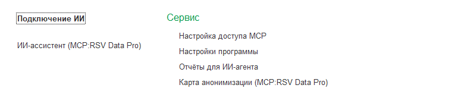
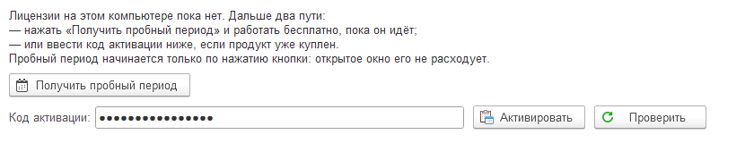
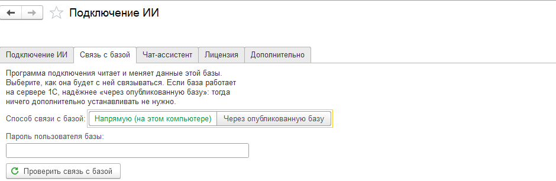
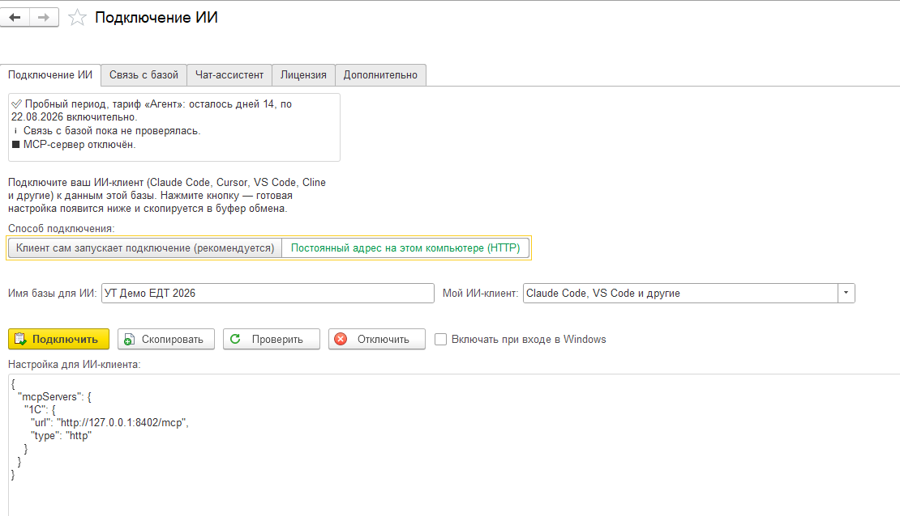
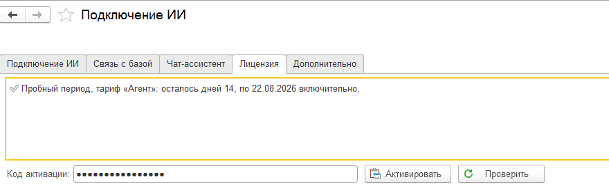
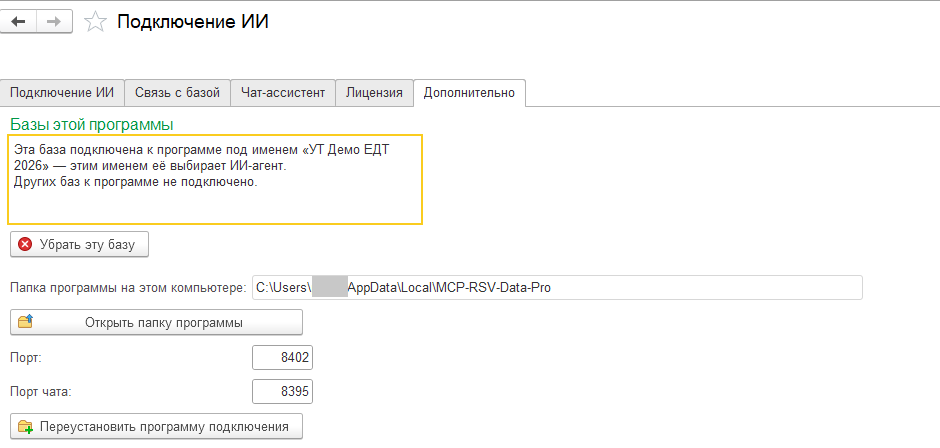
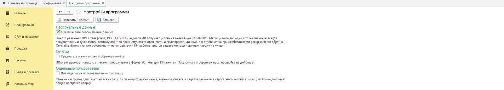
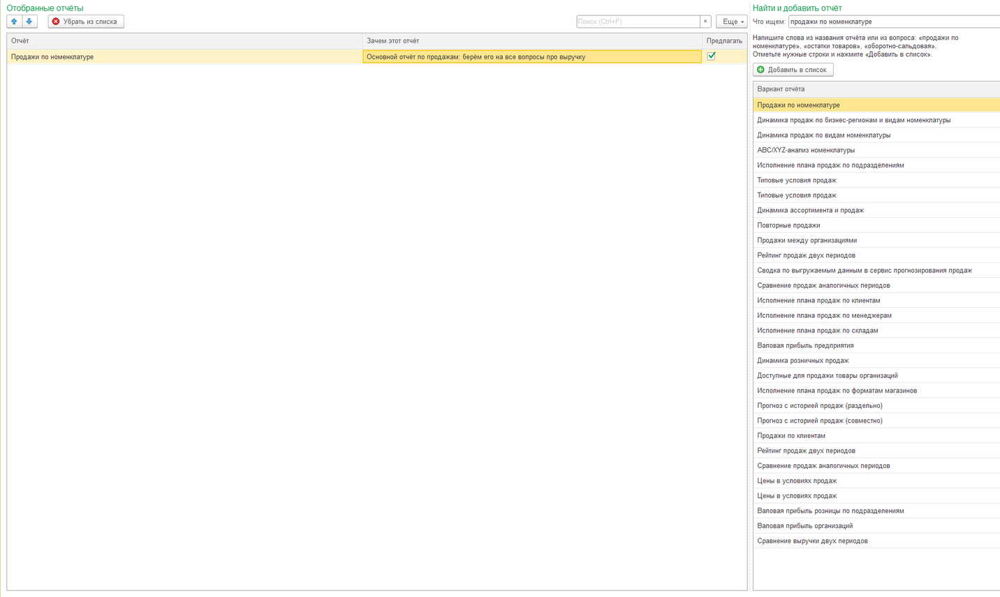
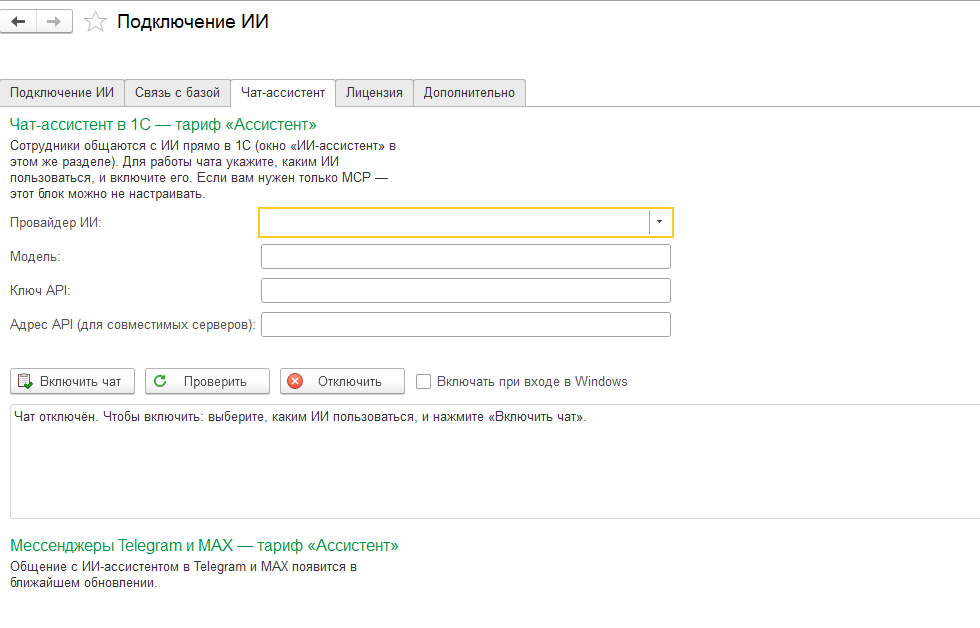

Руководство пользователя
Как установить продукт, подключить ИИ-агента к данным вашей базы 1С, выдать права и работать с отчётами. Если вы только начинаете — идите с раздела «Быстрый старт».
1. Что это и зачем
MCP:RSV Data Pro даёт вашему ИИ-агенту доступ к данным работающей базы 1С. Вы спрашиваете обычными словами — агент отвечает цифрами из вашей базы. Ни выгрузок, ни промежуточных файлов, ни языка запросов знать не нужно.
«Сколько НДС к уплате за первый квартал?»
«Покажи остатки товаров по складам на сегодня.»
«Исправь наименование у этой номенклатуры.»
«Перепроведи заказы за вчера.»
Почему цифры совпадают с 1С
Обычный подход «пусть нейросеть напишет запрос к базе» на типовой конфигурации не работает: похожий самодельный запрос выглядит правдоподобно, но числа в нём другие, и расхождение вскрывается поздно. Поэтому продукт идёт другим путём.
- Аналитический вопрос закрывается готовым отчётом конфигурации — тем самым, который человек открывает в 1С. Считает отчёт, а не агент.
- Вопрос про налоги закрывается чтением сохранённой регламентированной отчётности — агент берёт готовые показатели из вашей декларации, а не пересчитывает проводки по своему разумению.
- Если готового отчёта под вопрос нет, агент считает сам по данным учёта — и честно помечает, что это расчёт по базе, а не типовой отчёт. Вы всегда знаете, на что смотрите.
Что с безопасностью
Из коробки продукт умеет только смотреть. Изменение данных выключено целиком, и включает его администратор базы адресно — по конкретному пользователю и по конкретному виду операций. Ни одно изменение не выполняется одним вызовом: агент сначала показывает предпросмотр «было → станет», человек подтверждает, и только тогда изменение применяется. Обходного режима «выполнять сразу» не существует. Всё, что агент сделал, попадает в штатный журнал регистрации 1С. Персональные данные по умолчанию обезличиваются: в ИИ-модель уходят условные обозначения, а не ФИО, ИНН и названия контрагентов.
Из чего состоит продукт
- Расширение для 1С — подключается к базе стандартным механизмом расширений. Добавляет в интерфейс раздел с настройками, правами и чатом.
- Программа подключения — небольшая программа, которая работает рядом с 1С на вашем компьютере и служит переводчиком между ИИ-клиентом и базой. Скачивать и запускать её вручную не нужно: она устанавливается сама по кнопке в 1С и обновляется сама.
Три способа пользоваться
Способы независимы: настраивайте только тот, который вам нужен. Работает сегодня первый — подключение вашего ИИ-клиента; два других готовятся к выпуску, и об этом честно сказано в таблице.
| Способ | Кому | Что нужно | Тариф |
|---|---|---|---|
| Свой ИИ-клиент Claude Code, Claude Desktop, Cursor, VS Code, Cline, Codex |
программисту 1С, аналитику, обслуживающей организации — всем, у кого агент уже есть | только этот продукт: агента вы приносите своего, ключ ИИ-провайдера не нужен | «Агент» |
| Чат прямо в 1С окно «ИИ-ассистент» Готовится |
бухгалтеру, менеджеру, руководителю — тому, кто редакторы кода не ставит | доступ к ИИ-провайдеру: ключ API или действующая подписка на Claude/Codex | «Ассистент» |
| Мессенджеры Telegram и MAX Готовится |
тем, кому нужен ответ вне рабочего места | доступ к ИИ-провайдеру | «Ассистент» |
Частая путаница. Чтобы работать через свой ИИ-клиент, чат в 1С включать не нужно, и ключ ИИ-провайдера тоже не нужен. Это разные вещи, и в форме настройки они разведены по разным закладкам.
Чем отличается от других продуктов линейки
| Возможность | MCP:RSV Data (бесплатный) | MCP:RSV Data Pro |
|---|---|---|
| Чтение данных и структуры базы | да | да |
| Обезличивание персональных данных | да | да, с настройкой по пользователям |
| Готовые отчёты конфигурации | нет | да |
| Регламентированная отчётность | нет | да, чтение |
| Изменение данных (объект, группы, проведение, код) | нет | да, по адресным правам и с подтверждением |
| Журнал регистрации | нет | да |
| Справка конфигурации для агента | нет | да |
| Чат-ассистент внутри 1С | нет | готовится, тариф «Ассистент» |
| Подключение одной кнопкой из 1С | нет | да |
| Одна программа на все базы компьютера | нет | да |
А MCP:RSV Server — это другой продукт. Он про код: работает в среде разработки 1С:EDT и помогает агенту писать и править модули, создавать объекты метаданных, формы и схемы компоновки, проверять и отлаживать написанное. MCP:RSV Data Pro — про данные работающей базы. Нужны данные — это Data Pro; нужно дорабатывать саму конфигурацию — это Server. Продукты не заменяют друг друга и спокойно живут вместе.
2. Быстрый старт за 5 минут
Вы установите расширение в базу, нажмёте одну кнопку и получите готовую настройку для своего ИИ-клиента. После этого можно спрашивать агента про данные базы обычными словами.
Что понадобится:
- Windows на том компьютере, за которым вы работаете, и установленная платформа 1С;
- режим совместимости вашей конфигурации — 8.3.16 или выше (либо «не использовать»);
- выход в интернет — чтобы получить пробный период или проверить купленный код;
- ваш ИИ-клиент: Claude Code, Claude Desktop, Cursor, VS Code, Cline, Codex.
Открывать порты наружу не нужно. Публиковать базу на веб-сервере — тоже, если база доступна с вашего компьютера. Живёт база на удалённом сервере (в том числе под Linux) — загляните в раздел «База на другом компьютере или на сервере»: там короткий путь для этого случая.
Шаг 1. Установите расширение в базу
В 1С:Предприятии откройте Администрирование → Печатные формы, отчёты и обработки → Расширения, нажмите Добавить и выберите файл расширения.
Затем в списке расширений снимите два флажка у добавленного расширения: «Безопасный режим» и «Защита от опасных действий». Без этого платформа запретит продукту работать, и окно настройки честно об этом скажет.
Закройте 1С и войдите снова.
Если ваша база опубликована на веб-сервере, после установки расширения публикацию нужно обновить — иначе способ связи «через опубликованную базу» будет недоступен.
Шаг 2. Откройте окно настройки и получите пробный период
В 1С появился раздел MCP:RSV Data Pro. Откройте в нём Подключение ИИ.

Наверху окна — краткое состояние: лицензия, связь с базой, подключение. Перейдите на закладку «Лицензия». Пока лицензии на этом компьютере нет, там видны пояснение и две дороги дальше.

- Продукт ещё не куплен — нажмите «Получить пробный период». Через несколько секунд строка состояния скажет: «Пробный период, тариф „…“: осталось дней 14, по ДД.ММ.ГГГГ включительно». Всё готово, можно работать.
- Продукт куплен — введите код активации в поле ниже и нажмите «Активировать». Пробный период при этом не нужен и не тратится.
Пробный период начинается только по нажатию кнопки. Открыли окно посмотреть, полистали закладки, закрыли — ни одного дня не потрачено. Нажмёте завтра или через неделю — отсчёт пойдёт с того момента. Подробности — в разделе «Лицензия, пробный период и тарифы».
Шаг 3. Проверьте, что продукт видит базу
Перейдите на закладку «Связь с базой» и выберите способ:
- «Напрямую (на этом компьютере)» — база лежит на этом же компьютере, или здесь установлена платформа 1С той же версии, что и сервер 1С. Настраивать больше нечего.
- «Через опубликованную базу» — база опубликована на веб-сервере. Надёжнее для баз на сервере 1С. Проверьте адрес сервиса подключения — если вы сейчас работаете в опубликованной базе, окно подставит его само; при необходимости замените своим. Затем укажите пользователя базы и пароль.
Нажмите «Проверить связь с базой». Обычно это несколько секунд, на медленном канале — до полутора минут. Ответ придёт прямым текстом: связь есть или почему её нет.
Пароль пользователя базы. Если вход в базу защищён паролем, введите его здесь при любом способе связи. Пароль хранится на вашем компьютере в зашифрованном виде и в базу 1С не попадает.

Шаг 4. Получите настройку одной кнопкой
Вернитесь на закладку «Подключение ИИ».
- В поле «Имя базы для ИИ» напишите, как вы сами называете эту базу: «Моя БП», «ЕРП Круга», «Зарплата». Этим именем ИИ-агент будет выбирать её среди ваших баз.
- Нажмите «Получить настройку для ИИ-клиента».
Дальше всё произойдёт само: программа подключения установится (скачивать её отдельно не нужно), эта база подключится к ней, а в поле ниже появится готовый блок настройки — он же сразу скопируется в буфер обмена.

Главная кнопка меняет название вместе со способом подключения. При способе по умолчанию — «клиент сам запускает подключение» — она называется «Получить настройку для ИИ-клиента»; при способе «постоянный адрес на этом компьютере» — «Подключить». Это одна и та же кнопка, и она всегда первая в ряду, жёлтая.
Первое нажатие идёт дольше остальных — в этот момент продукт проверяет лицензию. Форма всё это время пишет, что происходит, и сама дожидается результата: нажимать кнопку второй раз не нужно.
Шаг 5. Вставьте настройку в свой ИИ-клиент
Откройте файл настроек MCP-серверов вашего клиента и вставьте скопированный блок в раздел
mcpServers. Для Claude Code это файл .mcp.json в корне проекта;
куда вставлять у остальных клиентов — в разделе
«Настройка вашего ИИ-клиента».
Перезапустите ИИ-клиент.
Одна запись — на все ваши базы. Программа подключения на компьютере одна и обслуживает все базы сразу. В каждой следующей базе достаточно нажать ту же кнопку из шага 4 — и она появится у агента под своим именем. Заводить вторую запись в клиенте не нужно; старые записи от прежних версий можно удалить.
Готово. Проверьте
Скажите своему агенту первую фразу:
«Что за база 1С у тебя подключена?»
В ответ придёт паспорт базы: название конфигурации и её версия, платформа, подключённые расширения, разделы учёта. Это и есть доказательство, что связь работает.
Дальше можно спрашивать по делу:
«Сколько складов в базе?»
«Покажи остатки товаров на сегодня.»
«Сделай оборотно-сальдовую ведомость за прошлый месяц.»
Отвечает цифрами из базы — всё работает.
Что дальше
Из коробки агент работает только на чтение. Он смотрит данные, выполняет готовые отчёты, читает справку конфигурации — но ничего не меняет. Право что-то изменять выдаётся адресно, конкретному пользователю базы, в окне MCP:RSV Data Pro → Настройка доступа MCP. Пока право не выдано, соответствующая команда агенту недоступна, как бы он ни просил.
Персональные данные по умолчанию скрыты от ИИ. Вместо ФИО, телефонов и ИНН
агент получает условные метки вида [ФЛ-00001]. Это можно изменить в окне
Настройки программы — целиком или отдельному человеку.
Если что-то не подключилось — окно «Подключение ИИ» само пишет причину и следующий шаг. Разбор частых случаев — в разделе «Устранение неполадок».
3. Что нужно для работы
| Что | Требуется | Пояснение |
|---|---|---|
| Режим совместимости конфигурации | 8.3.16 и выше, либо «не использовать» | Единственное жёсткое требование к самой базе. Что делать, если режим ниже, — ниже на этой странице |
| Операционная система рабочего места | Windows | Программа подключения работает на том компьютере, за которым сидит человек |
| Платформа 1С на рабочем месте | приложение 1С:Предприятие, которым вы открываете базу | Для способа связи «напрямую» нужна ещё и 64-разрядная платформа: нужный компонент связи продукт подключает себе сам, прав администратора Windows не требуется. Способу «через опубликованную базу» версия и разрядность платформы на рабочем месте безразличны |
| Тип базы | файловая, клиент-серверная, опубликованная на веб-сервере | Работают все три |
| Публикация на веб-сервере | не требуется | Нужна, только если выбран способ связи «через опубликованную базу» |
| Аутентификация в базе | логин и пароль пользователя базы | Для способа «через опубликованную базу» доменная аутентификация не поддерживается |
| Интернет | чтобы получить пробный период или активировать купленный код, и дальше время от времени | Постоянного подключения не нужно: без сети продукт работает до 7 дней подряд (в пробном периоде — 2 дня), потом просит подключиться на минуту. Подробнее — «Сколько можно работать без интернета» |
| Ключ ИИ-провайдера | только для чата в 1С и мессенджеров | Для работы через свой ИИ-клиент не нужен: агента вы приносите своего |
Режим совместимости 8.3.16 — что будет, если ниже
Ничего страшного и ничего непонятного: платформа просто не даст подключить расширение и прямо об этом скажет — «Режим совместимости расширения конфигурации больше режима совместимости основной конфигурации». Продукт при этом не установится вовсе, испортить базу он не может.
Лечится повышением режима совместимости конфигурации — это обычная операция обновления, её делает тот, кто сопровождает базу. Посмотреть текущее значение можно в конфигураторе: свойства конфигурации, свойство «Режим совместимости».
С какими конфигурациями работает
- Чтение данных и структуры — любая конфигурация, включая самописную: продукт опирается на метаданные конкретной базы, а не на заранее прописанные имена объектов.
- Готовые отчёты — конфигурации с типовой подсистемой вариантов отчётов: УТ, КА, ERP, БП, ЗУП, УНФ и построенные на их основе.
- Регламентированная отчётность — конфигурации, где она ведётся: бухгалтерские и зарплатные. В базе без неё продукт честно откажет и подскажет, чем взять данные.
- Изменение данных, журнал регистрации, справка конфигурации — любая конфигурация.
Права в базе
- Чтобы настроить продукт нужны права администратора базы: окна «Подключение ИИ», «Настройка доступа MCP» и «Настройки программы» доступны только администратору.
- Чтобы им пользоваться достаточно обычных прав: агент работает под конкретным пользователем базы, с его ролями и ограничениями на уровне записей. Что закрыто человеку в 1С — закрыто и агенту.
- Изменять данные агент может, только если администратор выдал на это право — отдельно по видам операций и отдельно по каждому пользователю.
Какие ИИ-клиенты поддерживаются
Любой клиент с поддержкой открытого стандарта MCP. Проверены и описаны в этом руководстве: Claude Code, Claude Desktop, Cursor, VS Code, Cline, Codex. Подключение — на выбор двумя способами, см. раздел «Два режима подключения».
4. Установка расширения в базу
Расширение подключается штатным механизмом 1С — так же, как любое другое расширение. Операция одноразовая, занимает минуту, конфигурацию не меняет и снимается так же легко, как ставится.
- Войдите в базу с правами администратора.
- Откройте Администрирование → Печатные формы, отчёты и обработки → Расширения.
- Нажмите Добавить и выберите файл расширения продукта.
- В списке расширений снимите два флажка у добавленного расширения: «Безопасный режим» и «Защита от опасных действий».
- Закройте 1С и войдите снова.
База опубликована на веб-сервере? После установки расширения обновите публикацию — иначе способ связи «через опубликованную базу» работать не будет. В конфигураторе: Администрирование → Публикация на веб-сервере, на вкладке HTTP-сервисов отметьте сервис со словами «связь с программой подключения» и нажмите Опубликовать ещё раз.
Что появится в интерфейсе
После перезахода в базу в панели разделов появится раздел MCP:RSV Data Pro. В нём:
| Команда | Зачем открывать |
|---|---|
| Подключение ИИ | Главное окно. Подключение вашего ИИ-клиента, связь с базой, лицензия, включение чата. С него начинается работа |
| Настройка доступа MCP | Что агенту разрешено делать с данными: запись, групповые операции, проведение, выполнение кода — по каждому пользователю базы отдельно |
| Настройки программы | Единое окно настроек: обезличивание персональных данных, режим «только отобранные отчёты», значения для отдельных пользователей |
| Отчёты для ИИ-агента | Курируемый список: какие готовые отчёты агент предлагает в первую очередь. По умолчанию список пуст — агент видит все отчёты базы |
| ИИ-ассистент | Чат с ИИ по данным базы прямо в 1С. Окно открывается и показывает, как чат будет работать, но отправка вопросов пока выключена: тариф «Ассистент» готовится к выпуску |
| Карта анонимизации | Служебная таблица: какое условное обозначение какому реальному значению соответствует. Ведётся сама, заходить в неё в обычной работе не нужно |
У каждого окна есть встроенная справка: откройте форму и нажмите «?» или F1 — появится та же инструкция прямо в программе.
5. Программа подключения ставится сама
Отдельно скачивать, распаковывать и запускать нечего. Программа подключения устанавливается сама при первом нажатии кнопки «Получить настройку для ИИ-клиента» в окне «Подключение ИИ».
- Ни одного чёрного консольного окна. Программа работает невидимо, её состояние видно прямо в форме 1С.
- Ни одного шага «отредактируйте файл». Все настройки продукт пишет себе сам.
- Прав администратора Windows не требуется. Программа живёт в личных данных вашего пользователя Windows; компонент платформы 1С, нужный для связи с базой, продукт подключает себе сам — в вашей же личной настройке, чужие не затрагивая.
- Обновляется сама. Обновили расширение — при следующем открытии окна установленная программа молча заменяется новой. Кнопка «Переустановить программу подключения» на закладке «Дополнительно» осталась только на случай повреждённой установки.
Одна программа на компьютер — сколько угодно баз
Программа подключения на компьютере одна и обслуживает все ваши базы. Открыв окно в другой базе и нажав ту же кнопку, вы не ставите вторую программу — вы подключаете к ней ещё одну базу. Отсюда всё остальное: в ИИ-клиенте нужна одна запись, а нужную базу агент выбирает по имени. Подробнее — в разделе «Подключение: одна настройка на все ваши базы».
Если в разных базах установлены разные версии продукта, побеждает более новая: база со свежей версией обновляет общую программу, а база со старой её не откатывает. В такой базе окно прямо скажет, что версия продукта здесь устарела.
Куда именно ложатся файлы
На ваш компьютер — тот, за которым вы сидите. И это верно при любом способе открытия базы:
| Как открыта база | Где окажется программа подключения |
|---|---|
| Локальная файловая база | на вашем компьютере |
| Клиент-серверная база | на вашем компьютере |
| Тонкий клиент через веб-публикацию (база у клиента, вы подключаетесь через интернет) | на вашем компьютере, а не на сервере клиента |
| Браузер (веб-клиент) | не работает — см. предупреждение ниже |
Сервер 1С отдаёт форме только данные, а все файловые операции и запуск идут на вашей машине. Это закрывает частый рабочий сценарий: программист открывает базу клиента тонким клиентом через интернет и настраивает подключение себе, ничего не устанавливая на сервер клиента.
Когда программа работает, а когда выключается
Это касается режима «постоянный адрес на этом компьютере» (во втором режиме программу запускает и останавливает сам ИИ-клиент).
| Что произошло | Программа подключения |
|---|---|
| Закрыли форму или всю 1С | работает дальше |
| Отключились от удалённого рабочего стола (закрыли окно RDP) | работает дальше |
| Нажали в форме кнопку «Отключить» | завершается |
| Вышли из системы Windows | завершается вместе с вашим сеансом |
| Перезагрузили или выключили компьютер | завершается |
Держать 1С открытой ради работы ИИ-клиента не нужно. Чтобы программа поднималась сама после перезагрузки, включите в форме галочку «Включать при входе в Windows».
Базу и лицензию 1С это не занимает. Программа подключается к базе только на время запроса и примерно через полминуты без работы отпускает соединение. Поэтому она не мешает обновлению конфигурации и монопольному режиму и не держит базу, пока вы ушли на обед. Следующий вопрос агента откроет соединение заново — сам, без вашего участия.
6. Лицензия, пробный период и тарифы
14 дней бесплатно — по кнопке, когда вам удобно
Пробный период даётся на 14 дней и открывает всё, что продукт умеет сегодня: подключение вашего ИИ-клиента ко всем вашим базам, готовые отчёты, регламентированную отчётность, журнал регистрации, изменение данных по правам. Регистрация не нужна. Платёжные данные не нужны.
Как его получить. Раздел MCP:RSV Data Pro → Подключение ИИ → закладка «Лицензия» → кнопка «Получить пробный период». В этот момент нужен интернет. Через несколько секунд строка состояния скажет: «Пробный период, тариф „…“: осталось дней 14, по ДД.ММ.ГГГГ включительно». Больше ничего делать не нужно — можно возвращаться на закладку «Подключение ИИ» и подключать своего агента.
Если ИИ-клиент у вас уже подключён, пробный период можно попросить и словами: «начни пробный период». Агент сделает то же самое, что кнопка. Сам, без просьбы, он его не начнёт — даже когда отвечает вам, что лицензии нет.
Пробный период даётся один раз на компьютер. Именно на компьютер, а не на учётную запись Windows: завести вторую учётную запись и получить ещё четырнадцать дней не получится. Если пробный период на этой машине уже был, кнопки не будет, а на попытку получить второй придёт строка «Пробный период не начат: …» с причиной.
Купленная лицензия считается иначе — она привязана к рабочему месту (компьютер плюс пользователь операционной системы), см. ниже.
Кнопка появляется и исчезает сама. Она видна, только пока лицензии нет и пробный период получить можно. Как только пробный период начался или введён купленный код, кнопка и пояснение с закладки уходят — лишнего на ней не остаётся.
Когда 14 дней закончатся, продукт останется установленным и будет ждать код активации. Данные и настройки никуда не денутся, ничего не удаляется и не портится: ввели купленный код — работа продолжается с того же места. Как купить — в разделе «Тарифы» на главной странице сайта.
Два тарифа
| Тариф | Для кого | Что входит |
|---|---|---|
| «Агент» | у вас уже есть свой ИИ-агент | Подключение вашего ИИ-клиента к базе: чтение и запросы, готовые отчёты, регламентированная отчётность, журнал регистрации, справка конфигурации, запись и групповые операции по правам, проведение документов, выполнение кода, обезличивание данных |
| «Ассистент» Готовится | нужен готовый ассистент, своего агента заводить не хочется | Всё из тарифа «Агент» плюс чат-ассистент прямо в 1С и каналы мессенджеров |
Тариф «Ассистент» пока не продаётся, и его возможности выключены. Окно чата в 1С открывается и показывает, как он будет работать, но отправка вопросов из него сейчас недоступна; каналы мессенджеров готовятся. Это не зависит от лицензии: так сделано намеренно, пока тариф не выпущен. Всё, что входит в тариф «Агент», работает полностью — и в пробном периоде тоже. Цены и периоды — в разделе «Тарифы» на главной странице сайта.
Как ввести код активации
Код выдаётся при покупке. Ввести его можно тремя способами; основной — первый.
- В самой 1С (основной способ). Окно «Подключение ИИ», закладка «Лицензия»: введите код в поле (он скрыт звёздочками, как пароль) и нажмите «Активировать». Через несколько секунд строка состояния скажет, принят код или нет — и если нет, то почему. Код запоминается: при следующем открытии окна вводить его заново не нужно.
- Словами своему ИИ-агенту — «активируй ключ ACT-…». Агент сделает это сам.
- Командой — там, где формы нет: установка на сервер, диагностика у клиента.
Рядом есть кнопка «Проверить» — перепроверить лицензию на сервере прямо сейчас. Она нужна сразу после продления или смены тарифа, чтобы не ждать очередной плановой проверки. Пробный период она не начинает и не расходует.

Состояние проверяется при каждом открытии окна
Открыли окно — продукт сам сверяет лицензию с сервером, спрашивать его об этом не нужно. Сначала мгновенно показывается то, что известно прямо сейчас (окно ничего не ждёт и открывается как обычно), под строкой появляется пометка «Сверяю с сервером лицензий…», и через несколько секунд состояние обновляется свежим ответом. Продлили лицензию, сменили тариф — увидите это, просто открыв окно.
Если интернета нет, окно всё равно открывается: показывает последнее известное состояние и спокойную строку «Сверить с сервером лицензий сейчас не удалось — показано последнее известное состояние». Это не отказ и не поломка — сверка пройдёт при следующей возможности.
Что видно в каждом состоянии
| Состояние | Что написано в форме | Что работает |
|---|---|---|
| Лицензии ещё нет | пояснение о двух путях и кнопка «Получить пробный период»; ниже — поле кода активации | агенту доступна одна команда — состояние лицензии, ввод кода и запуск пробного периода по вашей просьбе; остальные отвечают причиной отказа |
| Пробный период идёт | «Пробный период, тариф „…“: осталось дней N, по ДД.ММ.ГГГГ включительно» | всё |
| Пробный период получить не удалось | «Пробный период не начат: …» — причина прямо в строке (например, на этом компьютере он уже был) | кнопка после такого ответа уходит: повторное нажатие дало бы тот же отказ. Дальше — купленный код активации |
| Лицензия действует | «Лицензия действует, тариф „…“» и срок | всё по тарифу |
| Куплено «навсегда» | «Срок: бессрочно» | всё по тарифу |
| Пробный период кончился, срок истёк | причина человеческим языком + что сделать + контакт поставщика | агенту доступна одна команда — состояние лицензии и ввод кода |
| Связи не было слишком долго | «Продукт слишком долго работал без подтверждения лицензии» | подключите интернет: продукт подтвердит лицензию сам, вводить ничего не нужно |
| Тариф «Агент», человек включает чат | «Чат в 1С входит в тариф „Ассистент“; работа через внешний ИИ-клиент продолжает работать» | подключение ИИ-клиента работает полностью, чат не включается |
| Нет связи с сервером лицензий | «Не удалось получить ответ о лицензии» | проверьте интернет и нажмите «Проверить» |
Итог действия («код принят» / «код не принят: причина») показывается отдельной строкой со своим значком: опечатка в коде не выключает уже действующую лицензию.
Лицензия привязана к рабочему месту
- Рабочее место = компьютер + пользователь операционной системы. На терминальном сервере каждому сотруднику нужна своя лицензия.
- К информационной базе лицензия не привязана. С одного лицензированного рабочего места вы работаете с теми базами, к которым подключились; переезд базы, обновление конфигурации или смена сервера 1С лицензию не затрагивают.
- Сменили компьютер — введите свой же код активации на новом: лицензия переедет туда с тем же сроком и тем же тарифом, новый период покупать не нужно. На старом компьютере продукт перестанет работать. Работать вдвоём по одному коду не получится.
- Номер рабочего места виден в строке состояния лицензии — он появляется тогда, когда что-то пошло не так, потому что именно в этот момент его спрашивает поставщик.
Сколько можно работать без интернета
Постоянное подключение не требуется. Связь нужна в двух случаях: получить пробный период или активировать купленный код — и время от времени подтвердить, что лицензия в силе.
| Состояние | Сколько работает подряд без сети |
|---|---|
| Купленная лицензия, в том числе бессрочная | до 7 дней |
| Пробный период | до 2 дней |
Когда этот запас исчерпан, продукт пишет «Продукт слишком долго работал без подтверждения лицензии» и просит подключиться к интернету. Достаточно одного подключения: лицензия подтвердится сама, вводить ничего не нужно, и отсчёт начнётся заново. При обычной работе с интернетом вы этого никогда не увидите — проверка идёт фоном и работу не задерживает: сервер не ответил в этот раз — продолжаем работать.
В любом отказе по лицензии есть контакт поставщика: человек сразу видит, куда писать.
7. Подключение: одна настройка на все ваши базы
Порядок один и тот же, сколько бы у вас ни было баз:
- В базе нажимаете кнопку «Получить настройку для ИИ-клиента».
- Получаете готовый блок настройки — он же сразу копируется в буфер обмена.
- Вставляете его в свой ИИ-клиент один раз. Перезапускаете клиент.
- В следующей базе нажимаете ту же кнопку — и она появляется у агента под своим именем. В ИИ-клиенте править больше ничего не нужно.
Так получается, потому что программа подключения на компьютере одна и обслуживает все базы сразу. Агент видит один набор команд независимо от числа баз — его контекст не забивается тройным списком, а нужную базу он называет параметром.
Имя базы для ИИ
Поле «Имя базы для ИИ» — это то, чем агент выбирает базу среди остальных. Назовите базу так, как называете её сами: «Моя БП», «ЕРП Круга», «Зарплата». По умолчанию подставляется название конфигурации.
- Имя можно поменять в любой момент — нажмите главную кнопку ещё раз, и агент будет знать базу под новым именем.
- Двух баз с одинаковым именем не бывает: совпавшее имя окно уточнит папкой базы.
- Имена баз агент узнаёт сам — из проверки связи и из текста отказа, если базу не назвали. Пока баз больше одной, в «базу по умолчанию» продукт молча не идёт: он честно просит назвать нужную и показывает список.
Вариант «строго одна база»
Иногда агенту нельзя видеть остальные базы — например, он работает над проектом одного клиента. Под главной кнопкой лежит второй вариант адреса, который открывает ровно одну базу: к обычному адресу дописывается имя базы.
При таком подключении посторонних баз не видно ни в списке команд, ни в текстах отказов, а называть базу в каждом вопросе не требуется — она одна.
Что видно про чужие базы
Окно настройки открывают внутри базы клиента, поэтому имена других баз этого компьютера в нём не показываются никогда — только их количество (закладка «Дополнительно»). Там же есть кнопка «Убрать эту базу»: она отключает от программы только текущую базу и стирает её сохранённый пароль, остальные продолжают работать.
8. Два режима подключения
Переключатель «Способ подключения» на закладке «Подключение ИИ» решает, кто управляет программой подключения.
«Клиент сам запускает подключение» — по умолчанию
Программу запускает и останавливает ваш ИИ-клиент. Открыли клиент — он поднял подключение; закрыли — оно завершилось вместе с ним. В 1С ничего включать и выключать не нужно, ничего не висит в фоне, порт не занимается.
Это рекомендуемый режим — выбирайте его, если нет причины поступить иначе.
«Постоянный адрес на этом компьютере»
Программу включаете вы сами кнопкой в форме, и дальше она работает как обычная фоновая
программа Windows. У подключения появляется адрес вида
http://127.0.0.1:<порт>/mcp, доступный только с этого
компьютера.
Этот режим нужен, когда:
- ваш ИИ-клиент умеет подключаться только по адресу и не умеет запускать программу сам;
- подключение должно быть доступно постоянно, независимо от того, открыт ли редактор;
- системный администратор организует удалённый доступ — 1С на сервере, ИИ-клиент на другом компьютере.
Чем отличаются
| Клиент сам запускает подключение | Постоянный адрес на этом компьютере | |
|---|---|---|
| Кто запускает | ИИ-клиент | вы, кнопкой в форме 1С |
| Что-то работает в фоне | нет | да, пока не нажмёте «Отключить» |
| Порт на компьютере | не занимается | занимается один порт на все базы |
| Настройка в клиенте | путь к программе — форма подставляет сама | адрес http://127.0.0.1:<порт>/mcp |
| Надо выбирать свой ИИ-клиент в форме | нет | да — формат настройки у клиентов немного разный |
| Автозапуск при входе в Windows | не требуется | есть галочка в форме |
| Годится для удалённого доступа | нет | да, силами системного администратора |
| Когда выбирать | по умолчанию | когда клиенту нужен адрес или доступ должен быть постоянным |
Наружу ничего не открывается. Постоянный адрес доступен только с этого компьютера. Продукт сам «прокладку» в сеть не строит и прямого доступа к базе снаружи не открывает. Если доступ извне нужен, его настраивает системный администратор — осознанно и под свой контроль периметра.
Переключить режим можно в любой момент: выберите другой и нажмите главную кнопку — настройка сформируется заново и снова скопируется в буфер обмена. После отключения поле с настройкой очищается намеренно: прежний адрес больше не работает, и вставленная в ИИ-клиент такая настройка дала бы отказ.
9. Настройка вашего ИИ-клиента
Блок настройки вы уже получили в буфер обмена. Осталось вставить его в файл настроек
MCP-серверов вашего клиента — в раздел mcpServers — и перезапустить
клиент.
| ИИ-клиент | Куда вставить настройку | Что выбрать в поле «Мой ИИ-клиент» |
|---|---|---|
| Claude Code | .mcp.json в корне проекта |
«Claude Code, VS Code и другие» |
| VS Code | файл настроек MCP-серверов клиента — см. документацию клиента | «Claude Code, VS Code и другие» |
| Claude Desktop | файл настроек MCP-серверов клиента — см. документацию клиента | «Claude Code, VS Code и другие» |
| Codex | файл настроек MCP-серверов клиента — см. документацию клиента | «Claude Code, VS Code и другие» |
| Cursor | .cursor/mcp.json в папке профиля пользователя |
«Cursor» |
| Cline | файл настроек MCP-серверов расширения Cline
(cline_mcp_settings.json) |
«Cline» |
Поле «Мой ИИ-клиент» появляется только в режиме «постоянный адрес». В режиме «клиент сам запускает подключение» формат настройки у всех клиентов одинаковый, и выбирать нечего.
Как выглядит настройка
Режим «клиент сам запускает подключение». Блок содержит путь к программе подключения и путь к её настройкам — оба форма подставляет сама. Вставляйте как есть, править в нём ничего не нужно.
Режим «постоянный адрес». Блок содержит только адрес. Имя записи и номер порта форма подставит сама; ниже показано, чем отличаются варианты для разных клиентов.
Claude Code, Claude Desktop, VS Code, Codex и большинство других клиентов:
{
"mcpServers": {
"1С": {
"type": "http",
"url": "http://127.0.0.1:<порт>/mcp"
}
}
}Cursor — отличается только именем типа транспорта:
{
"mcpServers": {
"1С": {
"type": "streamable-http",
"url": "http://127.0.0.1:<порт>/mcp"
}
}
}Cline — тоже только имя типа:
{
"mcpServers": {
"1С": {
"type": "streamableHttp",
"url": "http://127.0.0.1:<порт>/mcp"
}
}
}Это один и тот же транспорт — у клиентов исторически разные имена для него. Поэтому и существует поле «Мой ИИ-клиент»: выберите свой, и форма соберёт блок в нужном виде. Ошиблись — клиент просто не увидит сервер; выберите правильный вариант, нажмите кнопку ещё раз и замените блок.
Мелочи, которые экономят время
- Раздел
mcpServersуже есть в файле? Добавьте нашу запись внутрь него, не заменяя остальные серверы. Целиком файл перезаписывать не нужно. - Перезапустите клиент после правки файла — на лету настройки подхватывают не все клиенты.
- Записи от прежних версий продукта можно удалить — достаточно одной записи на все базы.
- Настройка сохраняется в форме: при повторном открытии окна вы увидите прежний блок, а кнопка «Скопировать» положит его в буфер ещё раз.
- Точный путь к файлу настроек у клиентов меняется от версии к версии — если в таблице выше его нет, посмотрите документацию своего клиента по разделу «MCP servers».
10. Несколько баз на одном компьютере
Программа подключения на компьютере одна, и она обслуживает все ваши базы сразу. Открыв окно «Подключение ИИ» в другой базе и нажав ту же главную кнопку, вы не ставите вторую программу — вы подключаете к ней ещё одну базу.
Отсюда главное следствие: в ИИ-клиенте нужна одна запись на все базы, а не по записи на базу. Адрес у неё один и не меняется, сколько бы баз вы ни добавили. Агент при этом видит один набор инструментов независимо от числа баз — его контекст не забивается тройным списком одного и того же.
Как агент выбирает базу
Базу агент называет по имени — тому, которое вы задали в поле «Имя базы для ИИ» на закладке «Подключение ИИ». По умолчанию туда подставляется название конфигурации, но лучше написать так, как вы называете базу сами: «Моя БП», «ЕРП Круга», «Зарплата». Имя можно поменять в любой момент — нажмите главную кнопку ещё раз, и агент будет знать базу под новым именем.
- Двух баз с одинаковым именем не бывает: совпавшее имя окно уточнит папкой базы.
- Имена баз агент узнаёт сам — из проверки связи, из описания параметра и из текста отказа. Вам не нужно ему ничего диктовать.
Базу не назвали — будет понятный отказ, а не тихая догадка. Пока баз больше одной, имя базы обязательно. Если агент его не указал, он получает ранний отказ со списком доступных баз и повторяет вызов уже с именем. Молча уйти «в базу по умолчанию» программа не может — это защита от ситуации, когда изменение уезжает не в ту базу.

Когда агенту нельзя видеть остальные базы
Иногда доступ нужен строго к одной базе: агент рабочего проекта не должен даже знать, что на компьютере есть другие. Для этого под главной кнопкой лежит второй вариант адреса — с именем базы в конце:
| Вариант адреса | Что видит агент | Имя базы в вызове |
|---|---|---|
http://127.0.0.1:<порт>/mcp |
все подключённые базы этого компьютера | обязательно, пока баз больше одной |
http://127.0.0.1:<порт>/mcp/<имя базы> |
ровно одну названную базу | не нужно |
На втором варианте посторонние базы не видны нигде — ни в списке инструментов, ни в текстах отказов. Работа с базой выглядит ровно так же, как если бы она была единственной.
Что ещё полезно знать
- Имена чужих баз не показываются и в самой форме. На закладке «Дополнительно» видно, что за база перед вами и сколько баз всего обслуживает программа, — но не их названия: окно открывают внутри базы клиента, и чужие имена там незачем.
- Старые записи в ИИ-клиенте можно удалить. Если вы подключали базы прежними версиями продукта, при первом нажатии главной кнопки окно само погасит прежнюю программу этой базы и снимет её запуск при входе в Windows, чтобы две программы не спорили за один порт. Достаточно одной записи в клиенте.
- «Убрать эту базу» (закладка «Дополнительно») отключает от программы только текущую базу: агент перестаёт её видеть, сохранённый пароль этой базы стирается. Остальные базы продолжают работать. Передумали — нажмите главную кнопку, база подключится снова.
- Разные версии продукта в разных базах. Побеждает более новая: база со свежей версией обновляет общую программу, а база со старой её не откатывает. В такой базе окно прямо скажет, что версия продукта здесь устарела.
11. Два способа связи с базой
Программа подключения связывается с вашей базой одним из двух способов. Выбор — на закладке «Связь с базой» окна «Подключение ИИ». Оба способа дают одинаковые ответы; разница в том, что для них нужно и как они ведут себя в вашей топологии.
| Способ | Когда работает | Что нужно указать | Удерживает ли базу |
|---|---|---|---|
| Напрямую (на этом компьютере) |
база файловая либо клиент-серверная, и на этом компьютере установлена платформа 1С нужной версии | ничего | да — сеанс отпускается после паузы простоя (около 30 секунд) |
| Через опубликованную базу | база опубликована на веб-сервере (IIS или Apache) | пользователь и пароль базы; адрес сервиса подключения окно чаще всего подставляет само | нет — сеанс живёт только на время вызова |
Для базы на сервере 1С рекомендуется второй способ
Прямое подключение требует, чтобы на компьютере, где работает программа, была установлена платформа 1С той же версии, что и сервер 1С. На чужой машине это условие не гарантировано и проверяется только опытным путём — расхождение версий выглядит как необъяснимая ошибка соединения.
Способ «через опубликованную базу» от версии платформы на рабочем месте не зависит вовсе: продукт работает с базой по уже существующему веб-каналу — тому же, через который открывается веб-клиент. Ставить и подбирать что-либо на рабочем месте не нужно.
Программа может стоять не там, где база
На способе «через опубликованную базу» программа подключения не обязана находиться рядом с базой. Типичный случай — обслуживающая организация: программист открывает базу клиента через интернет и настраивает подключение себе, на свой компьютер. Файлы программы и её работа при этом остаются на компьютере человека, а с базой она общается по опубликованному веб-каналу.
Доступ по этому каналу закрыт по умолчанию. Он открывается только вашей программе подключения и только при действующей лицензии. Установка расширения и публикация базы сами по себе не дают доступа никому. Лицензия при этом привязана к рабочему месту — тому компьютеру и тому пользователю Windows, где работает программа.
Ограничения способа «через опубликованную базу»
- Нужна публикация — и её обновление после установки расширения. Если базу публиковали до того, как вы установили или обновили расширение, сервис связи в публикацию не попал: адрес будет отвечать «страница не найдена». Лечится повторной публикацией с отмеченным сервисом продукта.
- Долгие операции ограничены таймаутами веб-сервера. Настройки веб-сервера задаёт его администратор, и продукт их не переопределяет.
- Аутентификация ОС (доменная) не поддерживается — только логин и пароль пользователя информационной базы. Заведите для программы отдельного пользователя базы с нужными правами.
Протокол — какой у публикации, такой и у продукта. http:// и https:// равноправны: работает публикация в браузере — работает и подключение. По http:// пароль и данные идут по сети открытым текстом ровно так же, как при работе с этой базой через браузер по http://; выбор протокола — за администратором публикации.
Встроенная справка конфигурации (та, что человек видит по кнопке «?») на этом способе работает тоже: её отдаёт сама опубликованная база, прямой доступ к базе и конфигуратор не нужны.
Что быстрее — замеры
Стенд: файловая база УТ Демо, публикация на IIS на этой же машине, сравнение живым подключением. Ответы обоих способов совпадают байт в байт — различается только время.
| Замер | Через опубликованную базу | Напрямую |
|---|---|---|
| Первый вызов после простоя («холодный») | 0,11 с | 3,9 с — открывается сеанс базы |
| Серия из 20 чтений, средний вызов | 13 мс | 8 мс |
| Крупный ответ (1000 строк, около 200 КБ данных) | 46 мс | 65 мс |
| Предпросмотр изменения → выполнение | 0,08 с → 1,6 с | 4,3 с (первый) → 1,3 с |
| Обновление конфигурации при работающей программе | проходит сразу | после паузы простоя (около 30 с) |
- Замеры сняты на одном компьютере. На канале «программист → база клиента» к каждому вызову добавляется сетевая задержка до веб-сервера клиента.
- Потолок одного ответа задаёт сам продукт: читающие инструменты отдают до 1000 строк за вызов. До пределов веб-сервера такой ответ не достаёт, поэтому обрывов «по размеру» на этом способе не бывает по построению.
Программа не удерживает базу. Соединение открывается на время запроса и отпускается после простоя — около 30 секунд. Поэтому работающая программа не занимает лицензию 1С, когда никто ничего не спрашивает, и не мешает обновлению конфигурации и монопольному режиму.
12. Проверка связи и пароль базы
На закладке «Связь с базой» есть кнопка «Проверить связь с базой». Она проверяет именно тот способ, который выбран сейчас, и говорит результат прямым текстом: связь есть — или почему её нет.
- Обычно проверка занимает несколько секунд. На медленном канале — например, через VPN — до полутора минут: всё это время виден статус «Проверяю связь с базой…». Это не зависание, программа честно подключается и ждёт ответа базы. Нажимать кнопку повторно не нужно, результат появится сам.
- Проверка не оставляет базу за собой: сеанс закрывается сразу.
Статус всегда честный
Краткое состояние вверху окна никогда не расходится с подробным: строка о связи — это итог последней проверки, и любая новая проверка её заменяет. Если подключение только что ответило «связи нет», наверху будет то же самое.
- Пока связь в этом сеансе никто не проверял, там написано «Связь с базой пока не проверялась». Это не поломка, а отсутствие ответа: сразу после открытия окна связь не проверяется, чтобы не занимать базу и не задерживать открытие.
- Сменили способ связи, адрес публикации или пользователя базы — прежний ответ забывается: он относился к другому пути до базы.
- Если база не пустила из-за пользователя или пароля, окно само откроет закладку «Связь с базой» и поставит курсор в то поле, которого не хватает. По остальным причинам (нет сети, не тот адрес, база не опубликована) закладка не переключается — там нужно чинить другое, и причина написана прямо в состоянии.
Пароль пользователя базы
Поле пароля видно при любом способе связи — оно нужно, если вашему пользователю для входа в базу требуется пароль.
- Пароль хранится на вашем компьютере, в зашифрованном виде средствами Windows, с привязкой к вашей учётной записи. Расшифровать его под другой учётной записью нельзя.
- В базу 1С он не попадает — и в отчёт диагностики тоже.
- Кнопка «Забыть пароль» удаляет его. Пароль базы стирается и тогда, когда вы отключаете эту базу от программы кнопкой «Убрать эту базу».
Адрес чаще всего подставляется сам
Если вы работаете в базе по веб-адресу — то есть открыли её через ту же публикацию — окно знает этот адрес и подставляет его в поле «Адрес сервиса подключения» само, сразу в том виде, который продукт потом и принимает. Остаётся проверить его и ввести пользователя базы с паролем: их продукт за вас не знает.
- Подставленное значение — подсказка, а не приговор. Замените его своим или сотрите — при следующем открытии окна ваш ввод останется на месте, обратно ничего не вернётся.
- Уже настроенную связь окно не трогает. Если адрес в поле есть, подстановка не срабатывает.
- Поле осталось пустым — это не ошибка. Значит, сеанс 1С открыт не по веб-адресу, и взять адрес неоткуда: введите его руками. Ничего чинить не нужно.
Адрес можно вставлять любой — окно приведёт его к нужному виду
Поле несёт пример прямо в заголовке. Что бы вы туда ни вставили — адрес из строки браузера, адрес с хвостом от проверки, адрес с косой чертой на конце, — форма сама допишет недостающую часть:
| Что вставили | Что получится |
|---|---|
http://сервер/имя-базы | http://сервер/имя-базы/hs/rsvdatabridge |
http://сервер/имя-базы/ru_RU/ — из браузера | http://сервер/имя-базы/hs/rsvdatabridge |
http://сервер/имя-базы/hs/rsvdatabridge/ping | http://сервер/имя-базы/hs/rsvdatabridge |
Поэтому ответ «Похоже, это адрес веб-клиента, а не адрес сервиса подключения» — не тупик: просто нажмите «Проверить связь с базой» ещё раз, форма уже дописала адрес. Если адрес правили руками — сотрите поле и вставьте заново. Ответ «По этому адресу сервиса подключения нет» означает другое: база не опубликована, либо в публикации не отмечен сервис продукта, либо в адресе опечатка.
Как проверить публикацию в браузере
Если хочется убедиться, что опубликованная база готова, ещё до настройки — допишите к адресу базы /ping и откройте его в браузере:
http://сервер/имя-базы/hs/rsvdatabridge/pingБраузер спросит логин и пароль — введите пользователя базы 1С. Дальше по ответу:
| Что видно в браузере | Что это значит |
|---|---|
Строка со словами "ok":true | Всё на месте: база опубликована, расширение установлено, сервис отвечает. Пометка "configured":false в этой же строке — норма до первой настройки. |
| Браузер снова и снова спрашивает пароль | Неверные логин или пароль пользователя базы. |
| «Страница не найдена» (404) | База не опубликована либо в публикации не включён нужный сервис. Частый случай: публикацию делали до установки или обновления расширения — опубликуйте базу ещё раз, отметив сервис продукта. |
13. Работа через прокси
Обычно здесь настраивать нечего, и никаких полей прокси-сервера вы не видите. Программа сама находит путь до базы: сначала пробует связаться напрямую, а если не получилось — через прокси-сервер, настроенный в этой системе Windows (тот же, которым пользуется браузер, вместе с его списком исключений). В обычной сети второй попытки не бывает вовсе.
Флажок «Использовать прокси-сервер» нужен в одном случае: адрес прокси-сервера вам назвал администратор сети, а в самой Windows он не прописан или прописан другой. Тогда включите флажок — появятся четыре поля.
| Поле | Что вводить |
|---|---|
| Адрес | сервер прокси без http:// — например proxy.company.local или 192.168.0.10. Можно вставить и целиком с портом (proxy.company.local:3128): порт форма разложит по полям сама |
| Порт | порт прокси-сервера — чаще всего 3128, 8080 или 8888 |
| Пользователь | только если прокси-сервер требует вход. Это не пользователь базы 1С |
| Пароль | пароль для входа на прокси-сервер, тоже не пароль базы |
Пароль прокси-сервера — это не пароль пользователя базы. Он хранится отдельно, в зашифрованном виде на этом компьютере, и в базу не попадает. Если вход не принял именно прокси-сервер, форма так и напишет и поставит курсор в его пароль, а не в пароль базы: перебирать пароль 1С там, где виноват посредник, — потерянный час.
- Флажок «Связываться с базой только через этот прокси-сервер» обычно не нужен. Включайте его, если прямая попытка не отказывает сразу, а подолгу ждёт ответа: тогда программа не будет делать её вовсе.
- Снятый флажок «Использовать прокси-сервер» убирает эти настройки целиком и стирает сохранённый пароль прокси-сервера — ничего лишнего за собой не остаётся.
- Когда связь поднялась через прокси-сервер, состояние честно об этом пишет: «Связь идёт через прокси-сервер…».
- Прокси-сервер имеет смысл только для способа «через опубликованную базу»: прямая связь идёт средствами платформы 1С и никакого сетевого посредника не знает. Поэтому при выбранном способе «напрямую» флажка на форме нет.
14. Как устроена защита
Защита собрана слоями, и ни один слой не заменяет другой. Даже если агент ошибётся или получит вредную инструкцию прямо в данных, ему придётся пройти их все — а последние два ещё и оставляют след.
| Слой | Что это значит | Что даёт вам |
|---|---|---|
| 1. Права информационной базы | Всё выполняется под конкретным пользователем базы — с его ролями и ограничениями на уровне записей | Агент не может больше, чем этот пользователь. Что закрыто человеку в 1С — закрыто и агенту |
| 2. Из коробки выключено всё | Сразу после установки агент работает только на чтение и не меняет ничего | Продукт нельзя «случайно» подключить так, чтобы он начал что-то менять |
| 3. Адресные права | Администратор включает операции по видам — запись, групповые операции, проведение, выполнение кода — и отдельно по каждому пользователю базы | Аналитику только чтение, внедренцу запись, никому выполнение кода. Настраивается формой прямо в базе |
| 4. Предпросмотр и подтверждение | Первый вызов ничего не меняет и показывает, что будет сделано; второй выполняет ровно показанное | Ошибка агента не превращается в изменение данных. Обходного «выполнять сразу» не существует |
| 5. Обезличивание персональных данных | По умолчанию вместо ФИО, телефонов, ИНН модель получает условные метки | Персональные данные не покидают базу вместе с вопросом к ИИ |
| 6. Аудит | Предпросмотр, выполнение и отказ по правам попадают в штатный журнал регистрации 1С | Всегда видно, кто, что и когда сделал. Никаких «своих» журналов на стороне |
К третьему слою примыкает важная деталь: инструмент, на который у пользователя нет права, вообще отсутствует в списке инструментов агента. Он не «получает отказ» — он даже не знает, что такая команда бывает. Слабый агент не тыкается в недоступное, а вредная инструкция, попавшая в данные, не может позвать то, чего в сеансе нет.
Наружу продукт ничего не открывает
Программа подключения слушает только этот компьютер. По сетевому адресу её порт не отвечает вообще — это не настройка и не сбой, а поведение по построению. Продукт не строит «прокладку» наружу и не открывает прямой доступ к базе из сети.
Если доступ с другого компьютера всё-таки нужен, его настраивает системный администратор клиента — пробросом порта, VPN или туннелем, осознанно и под свой контроль периметра. Так контроль над периметром остаётся у вас. Для этого случая есть отдельная памятка администратору.
Честно о рисках. Агенты ошибаются. Групповые операции и выполнение кода меняют много данных сразу. Включайте права адресно, читайте предпросмотр и делайте резервную копию — ровно так же, как вы делаете это перед запуском типового «Группового изменения реквизитов» руками.
15. Настройка доступа: кому что можно
Окно MCP:RSV Data Pro → Настройка доступа MCP — то место, где решается, что ИИ-агенту разрешено делать с данными вашей базы. Открыть его может только пользователь с правами администратора.
По умолчанию агент работает только на чтение: смотрит данные, выполняет готовые отчёты, читает справку конфигурации — и ничего не меняет. Право что-либо изменять выдаётся здесь: адресно, осознанно, конкретному пользователю информационной базы.
Как устроена таблица
- Первая строка «Все остальные пользователи» — политика по умолчанию для всех, кому не задана отдельная строка. Обычно её оставляют пустой (всё выключено), а права включают точечно конкретным людям ниже.
- Остальные строки — пользователи вашей базы. Нужного удобно искать через стандартный поиск по списку.
Права привязаны к пользователю информационной базы, под которым программа подключена к базе: агент действует от его имени и в рамках выданных ему здесь прав.
Что означает каждое право
Галочки идут от «мягких» к самым рискованным — включайте ровно то, что действительно нужно.
| Право | Что разрешает агенту | Пример просьбы |
|---|---|---|
| Запись | Изменять и создавать отдельные объекты — реквизиты справочников, документов и так далее | «Исправь наименование у этой номенклатуры» |
| Групповые операции | Массово менять реквизиты у многих объектов одной командой | «Проставь склад во всех заказах за вчера» |
| Проведение | Проводить документы, отменять проведение и перепроводить | «Перепроведи реализации за прошлую неделю» |
| Выполнение кода | Выполнять произвольный код на встроенном языке 1С — самое мощное и рискованное право | Разовая нестандартная обработка данных |
«Выполнение кода» — только для полностью доверенных пользователей и по необходимости. Оно фактически снимает границы: агент сможет сделать с данными почти всё, что может программист.
Порядок действий
- Найдите строку нужного пользователя — или строку «Все остальные пользователи» для общей политики.
- Отметьте галочками разрешённые действия.
- Нажмите «Записать настройки».
- Изменения действуют сразу — для новых запросов агента.
Чтобы забрать права, снимите галочки и снова нажмите «Записать настройки». Пользователь без единой галочки возвращается к режиму «только чтение».
Что видит агент до и после выдачи прав
Разница для агента не в том, что ему отказывают, — а в том, что соответствующих инструментов у него просто нет в списке. Пока право не выдано:
- агент не видит команд изменения данных и не предлагает их;
- уговорить его «всё-таки записать» невозможно: нечего звать;
- инструмента «выдать себе права» у агента нет и не будет — настройка живёт только в форме 1С.
После того как вы поставили галочку и записали настройки, нужные инструменты появляются у агента при следующем обращении — и работают в два шага, с предпросмотром и подтверждением.
16. Предпросмотр и подтверждение изменений
Ни одно изменение данных не выполняется одним махом. Цикл всегда один и тот же:
- Покажи, что изменится. Первый вызов ничего не меняет: он возвращает предпросмотр «было → станет» и одноразовое подтверждение к нему. Для групповой операции в предпросмотре видно, сколько объектов будет затронуто и примеры того, что с ними произойдёт; для проведения — сколько документов будет обработано, что пропущено и почему.
- Подтверди. Человек читает предпросмотр и соглашается.
- Выполнено. Второй вызов, уже с подтверждением, выполняет ровно то, что было показано, и возвращает пообъектный отчёт: что прошло, что нет и почему. Сбойный объект не роняет всю операцию.
Почему подтверждение нельзя обойти
- Обходного флага не существует ни в каком виде. Нет параметра «выполнять сразу», нет «режима без подтверждений» — второй шаг единственный способ что-либо изменить.
- Подтверждение одноразовое и короткоживущее: повторно им воспользоваться нельзя.
- Подтверждение привязано к содержимому операции. Подменить содержимое между шагами — показать одно, выполнить другое — не получится: изменённая операция потребует нового предпросмотра.
Что видит человек
В чате внутри 1С (готовится к выпуску, раздел 23) предпросмотр появляется прямо в диалоге, с кнопками «Подтвердить операцию» и «Отменить». Изменение выполняется, только если нажата первая. Подтвердить за человека модель технически не может — кнопку нажимает человек.
В своём ИИ-клиенте агент показывает предпросмотр в ответе и ждёт вашего слова; получив согласие, он делает второй шаг. Если предпросмотр вам не понравился, вы просто не соглашаетесь — данные остаются нетронутыми.
Для выполнения кода есть дополнительная страховка — режим репетиции: код прогоняется в транзакции, которая затем откатывается, и результат показывается до того, как что-либо зафиксировано.
Совет. Перед подтверждением массовых изменений убедитесь, что предпросмотр соответствует тому, что вы имели в виду. При серьёзных операциях полезна свежая резервная копия базы: агент выполняет задачу как есть, а откат — это восстановление из копии.
17. Обезличивание персональных данных
Обезличивание включено по умолчанию. Вместо реальных ФИО, наименований контрагентов, телефонов, адресов, почты, ИНН и СНИЛС ИИ получает условные метки вида [ФЛ-00001].
Зачем это нужно
Вопрос к ИИ-агенту почти всегда уходит в облачную модель — за пределы вашего контура. Обезличивание — единственное, что закрывает персональные данные от модели: анализ идёт на условных обозначениях, а реальные значения подставляются обратно только в финальном ответе, который читаете вы.
Почему это не мешает работать
- Метки устойчивы: одно и то же значение всегда получает одну и ту же метку. Поэтому группировки, сравнения и сортировки работают как обычно.
- Метку можно вернуть обратно в вопрос: она принимается как значение отбора — «покажи заказы по
[КНТ-00007]» сработает. - Расшифровка по требованию: реальные значения раскрываются в итоговом ответе.
Номера у меток идут с пропусками и со временем растут — это нормально. Новая метка получает номер больше любого занятого, чтобы освободившийся номер не достался другому значению: иначе прежний ответ с меткой [ФЛ-00050] начал бы указывать на другого человека.
Как выключить
Настройка живёт в окне MCP:RSV Data Pro → Настройки программы, раздел «Персональные данные». Выключить обезличивание можно двумя способами:
- Общей настройкой — снять флажок «Обезличивать персональные данные». Действует на всех, кому не задано личное правило.
- Отдельному пользователю — поставить флажок «Для отдельных пользователей — по-своему», найти человека в таблице и выбрать ему «Не обезличивать». Личное значение сильнее общего, остальные продолжат работать с защитой.
Что при этом меняется: ИИ начинает видеть реальные значения — ФИО, наименования контрагентов, телефоны и прочее. Всё остальное работает ровно так же: права на данные, отборы, поиск значений, разрезы отчётов и расшифровка действуют независимо от того, включено обезличивание или нет.
Когда выключение оправдано. Модель работает внутри вашего контура и данные наружу не уходят, либо база тестовая. Во всех остальных случаях флажок лучше оставить включённым — если ИИ внешний, при выключенной настройке персональные данные уйдут к нему как есть.
Кнопка «Убрать устаревшие замены»
Продукт определяет персональные данные по самому объекту базы — по конкретному человеку, контрагенту, партнёру или пользователю. Но в базе, которая работала на старых версиях, могли остаться метки, поставленные по совпадению текста: под меткой организации-тёзки оказывался склад «Бытовая техника» или товар «Бутылка». Кнопка в «Настройках программы» убирает именно такие метки — новые больше не появляются.
- Что убирается: метки, за которыми стоит просто текст, а не объект базы.
- Что остаётся: метки по реальным людям, контрагентам, партнёрам и пользователям, а также телефоны, ИНН, СНИЛС, адреса и почта — там значение и есть сама строка.
- Нажимать можно сколько угодно раз: нечего убирать — продукт так и скажет.
18. Аудит: что и где записывается
Действия ИИ-агента записываются в штатный журнал регистрации 1С — тот самый, куда пишется всё остальное в вашей базе. Своего отдельного журнала «на стороне» у продукта нет и не будет: разбирать инцидент вы будете там же, где привыкли.
Что именно фиксируется
- Предпросмотр — агент запросил операцию и получил «что будет сделано».
- Выполнение — операция подтверждена и применена к данным.
- Отказ по правам — агент попытался сделать то, на что права не выдано.
Каждая запись идёт от имени того пользователя информационной базы, под которым программа подключена к базе. Поэтому в журнале видно не «какая-то программа», а конкретный пользователь, конкретное время и конкретное действие — и это те же записи об изменении объектов, которые база ведёт для любых изменений.
Как посмотреть
Журнал регистрации открывается штатными средствами платформы: в разделе администрирования вашей конфигурации (обычно «Обслуживание → Журнал регистрации») или из конфигуратора. Отбор — по пользователю, периоду и данным нужного объекта.
Тот же журнал доступен и самому агенту — на чтение. Можно спросить словами: «Какие ошибки были вчера?», «Кто менял этот документ?» — и получить разбор, не заходя в базу руками. Есть и дешёвый режим сводки: сколько событий, каких уровней и от кого, — с него удобно начинать.
19. Настройки программы
Окно MCP:RSV Data Pro → Настройки программы — единое место, где собраны все настройки продукта. Достаточно открыть его и посмотреть сверху вниз, чтобы понять, как настроена программа в вашей базе. У каждой настройки есть короткое пояснение прямо под названием — читать справку, чтобы понять, что делает флажок, не нужно.
Из коробки всё настроено безопасно. Если вы сюда ни разу не заходили, персональные данные скрываются от ИИ, а ограничение по отчётам выключено. Открывать окно нужно только тогда, когда что-то надо поменять осознанно. Доступно администратору базы.

Какие настройки есть сейчас
| Раздел | Настройка | Что означает |
|---|---|---|
| Персональные данные | Обезличивать персональные данные | Флажок стоит (по умолчанию): вместо реальных ФИО, телефонов, ИНН, СНИЛС и адресов ИИ получает условные метки. Флажок снят: ИИ видит реальные значения. Подробно — раздел 17 |
| Отчёты | Предлагать агенту только отобранные отчёты | Флажок снят (по умолчанию): отобранные отчёты идут первыми, но остальные отчёты базы тоже доступны. Флажок стоит: агент работает только с отобранными, на просьбу по другому отчёту он получит понятный отказ. Сам список отбирается в форме «Отчёты для ИИ-агента»; пока список пуст, настройка не действует |
Настройка отдельному пользователю
Любую из этих настроек можно задать конкретному пользователю информационной базы — например, разрешить видеть реальные ФИО тому, кто работает с локальной моделью. Флажок «Для отдельных пользователей — по-своему» раскрывает таблицу: строка на каждого пользователя базы, в колонке настройки выбирается, что действует именно на него.
| Значение в колонке | Что означает |
|---|---|
| Как у всех | Личного правила нет — действует общая настройка сверху |
| Обезличивать / Только отобранные отчёты | Настройка включена именно для этого человека, даже если для всех она выключена |
| Не обезличивать / Все отчёты базы | Настройка выключена именно для этого человека, даже если для всех она включена |
Правило простое: личное значение сильнее общего. Если человеку выбрано «Как у всех» — работает то, что задано в верхней части окна. Если снять флажок «Для отдельных пользователей — по-своему», все строки возвращаются к «Как у всех»: пока настройка не видна, она и не действует.
Кнопки окна
| Кнопка | Что делает |
|---|---|
| Записать и закрыть | Сохраняет всё окно и закрывает его |
| Записать | Сохраняет, не закрывая окно. До нажатия изменения не действуют |
| Убрать устаревшие замены | Разовая уборка старых меток обезличивания — см. раздел 17 |
Сохранение идёт целиком: либо записались все настройки, либо ни одна — наполовину сохранённого состояния не бывает. Ошиблись и не хотите сохранять — закройте окно без записи и откройте заново.
20. Готовые отчёты вашей конфигурации
Это главная ценность продукта. На аналитический вопрос («сколько продали», «какие остатки», «кто сколько должен») агент отвечает не собственной выдумкой, а готовым отчётом вашей конфигурации — тем самым, который человек открывает в разделах 1С. Считает отчёт, а не ИИ. Поэтому цифры в ответе совпадают с тем, что вы видите на экране 1С.
Почему это важнее, чем «пусть ИИ напишет запрос»
Обычный подход «попросим нейросеть написать запрос к базе» на типовой конфигурации не работает. У отчёта «Продажи» в типовой торговой конфигурации только сборка текста запроса занимает больше двух тысяч строк кода — такой запрос ИИ не напишет никогда. Хуже другое: результат «похожего» самодельного запроса выглядит абсолютно правдоподобно, но числа в нём другие, и расхождение вскрывается поздно — когда цифру уже отправили руководителю или в банк.
Продукт идёт другим путём: он выполняет отчёт самой конфигурации её же механизмом. Никакой своей методики расчёта у него нет — и в этом смысл.
Как это выглядит для вас
Никакой отдельной формы и никаких настроек для этого не нужно. Вы просто спрашиваете словами:
«Покажи продажи за прошлый месяц.»
«Сделай оборотку за июнь.»
«Остатки товаров по складу Центральный на конец квартала.»
«Продажи не по клиентам, а по менеджерам.»
«Задолженность покупателей на сегодня, только итоги.»
Агент сам находит подходящий отчёт, сам подставляет период и отборы и в ответе говорит, какой именно вариант он выполнил и почему. Названий отчётов, кодов и идентификаторов знать не нужно.
Что умеет
| Возможность | Что это значит на практике |
|---|---|
| Поиск словами | «Продажи по заказу», «остатки товаров», «оборотно-сальдовая ведомость» — агент находит нужный вариант и выполняет его за один шаг |
| Отчёт, а не вариант | Сказали «сделай оборотку» — выполнится основной вариант, тот же, что открывается в 1С по умолчанию. Если подходят варианты разных отчётов, продукт не угадывает, а возвращает короткий список на выбор |
| Смена разреза | «Не по клиентам, а по менеджерам», «убери разбивку по договорам». Искать другой сохранённый вариант не нужно — разрез задаётся прямо в вопросе. Итоговые суммы при этом не меняются: те же записи разложены иначе |
| Период словами | «Прошлый месяц», «этот квартал», «июнь 2026», произвольный интервал дат |
| Отборы | Склад, организация, контрагент, менеджер — по полям, которые есть у варианта. Значение находится по названию, коду или идентификатору |
| Свёртка больших отчётов | Режим «только итоги», когда нужны суммы, а не каждая строка. Если строк действительно много, отчёт читается по частям |
| Прозрачность | В ответе есть блок «Применено»: что реально подставилось в параметры и отборы. Если что-то из запрошенного применить не удалось — об этом сказано прямо, а не проглочено |
Если отчёт не сформировался
Так тоже бывает: часть отчётов 1С без открытой формы не строится в принципе. Продукт в этом случае не выдаёт пустоту за результат и не отправляет вас писать запрос. Он берёт данные учёта и считает величину сам — а в ответе честно помечает, что это расчёт по данным базы, а не типовой отчёт.
Читайте эту пометку. Она значит ровно то, что написано: цифра посчитана по данным учёта и может отличаться от того, что даст типовой отчёт со всей его методикой. Для «прикинуть» этого достаточно, для отчётности — сверьтесь с отчётом 1С. Работа при этом доведена до результата: вам называют число, а не отправляют к программисту.
С какими конфигурациями это работает
С конфигурациями, где есть типовая подсистема вариантов отчётов: УТ, КА, ERP, БП, ЗУП, УНФ и построенные на их основе. Покрытие по конфигурациям мы продолжаем расширять — это постоянная работа, а не разовая.
Чтение данных и структуры работает где угодно, включая самописные конфигурации: продукт опирается на метаданные вашей базы, а не на заранее прописанные имена. Так что даже там, где готовых отчётов нет, вопрос всё равно закрывается — расчётом по данным, с честной пометкой.
21. Отчёты для ИИ-агента: свой список
В типовой конфигурации сотни отчётов и их вариантов. В реальной работе нужны обычно несколько десятков: «Продажи», «Ведомость по товарам», «Задолженность клиентов», оборотно-сальдовая ведомость. Остальное — редкое, специфическое или просто ненужное вам, и среди этого агент тратит время и лишние вопросы.
Окно MCP:RSV Data Pro → Отчёты для ИИ-агента даёт сказать: вот эти отчёты у нас рабочие — предлагай их. Агент начнёт показывать их первыми, а при желании можно вообще ограничить его только ими.
По умолчанию список пуст, и пока он пуст — ничего не меняется. Агент видит все отчёты базы, ищет по ним и выполняет их, ровно как до того, как вы открыли эту форму. Заполнять список необязательно: это настройка «для тех, кому нужно».

Когда это стоит настроить
- вы внедрили ИИ-агента и хотите, чтобы он сразу шёл к нужным отчётам, а не перебирал похожие;
- пользователи жалуются, что агент берёт «не тот» отчёт из нескольких близких по названию;
- вы хотите ограничить агента строго проверенным набором — всем сразу или отдельным людям.
Что на форме
Слева — «Отобранные отчёты». Ваш список. Порядок строк — это и есть порядок, в котором агент будет их рассматривать: чем выше, тем важнее. Двигать строки — кнопками «Переместить вверх» и «Переместить вниз», убрать лишнее — «Убрать из списка».
| Колонка | Что означает |
|---|---|
| Отчёт | Название отчёта (варианта), как оно называется в 1С. Заполняется при добавлении, руками не правится |
| Зачем этот отчёт | Ваш комментарий для агента: чем отчёт полезен и когда его брать. Например: «Основной отчёт по продажам, берём его на все вопросы про выручку». Агент этот текст читает — пишите коротко и по делу. Поле необязательное |
| Предлагать | Галочка. Снимите её, чтобы временно отключить отчёт, не удаляя строку из списка |
Справа — «Найти и добавить отчёт». В поле «Что ищем» пишете слова из названия отчёта или прямо из вопроса пользователя («продажи по номенклатуре», «остатки товаров»), нажимаете «Найти» — и видите то же самое, что увидит агент: поиск идёт тем же механизмом. Отмеченные строки переносятся кнопкой «Добавить в список»; уже добавленные пропускаются.
Вверху — подпись «Как агент пользуется списком». Она человеческими словами пишет, что происходит прямо сейчас: список пуст / отобранные первыми / только отобранные, и сколько людей настроены отдельно. Это показ состояния, а не переключатель.
Как отобрать отчёты — по шагам
- Справа в поле «Что ищем» напишите тему: например,
продажи. - Нажмите «Найти».
- Отметьте нужные строки и нажмите «Добавить в список».
- Слева в колонке «Зачем этот отчёт» коротко напишите, когда его брать.
- Расставьте порядок: самые ходовые — наверх.
- Нажмите «Записать». До нажатия изменения не действуют — агент их не увидит.
Повторите для остальных тем: остатки, задолженность, закупки. Десяти–двадцати отчётов обычно достаточно.
Ограничить агента только этим списком
Сам режим «Предлагать агенту только отобранные отчёты» живёт не здесь, а в окне «Настройки программы» (раздел 19) — чтобы настройка была ровно в одном месте и две формы не показывали разное. Кнопка «Настройки программы» есть прямо в верхней части этой формы; вернувшись оттуда, список перечитывает состояние сам.
Режим можно задать общим для всех, а можно — отдельным людям: менеджеру только отобранные отчёты, главному бухгалтеру все отчёты базы. Личное правило всегда сильнее общего.
Страховка. Если список пуст, режим «только отобранные» не действует: одна забытая галочка не должна оставить агента вообще без отчётов.
Что полезно знать
| Вопрос | Ответ |
|---|---|
| Список общий или у каждого свой? | Список отобранных отчётов — общий на базу. По пользователям различается только правило, как агент им пользуется: «только отобранные» или «все отчёты базы» |
| Что увидит агент при включённом ограничении? | В списке отчётов — исключительно ваши. На просьбу о постороннем отчёте он ответит, что тот не входит в список, отобранный администратором, и покажет, что доступно. Тихо подменить отчёт другим он не может |
| Как добавить в список новый отчёт? | Поиск в этой форме всегда работает по всем отчётам базы, независимо от ограничения: оно действует на агента, а не на вас |
| Отчёт есть в 1С, а поиск его не находит | Проверьте, что вариант отчёта включён в конфигурации и доступен вашему пользователю: форма показывает только реально доступное. Попробуйте другие слова — поиск смотрит и название, и описание, и названия полей |
| Права пользователей это отменяет? | Нет. Если пользователю отчёт недоступен по правам 1С, он его не получит, даже если отчёт в списке |
| Если удалить все строки? | Пустой список ничего не ограничивает: агент снова видит все отчёты базы, даже если флажки остались включёнными |
На регламентированную отчётность этот список не влияет — это разные механизмы.
22. Регламентированная отчётность
Декларации по НДС и налогу на прибыль, 6-НДФЛ, расчёт по страховым взносам, УСН, бухгалтерская и статистическая отчётность, уведомления об исчисленных суммах налогов — всё это бухгалтер заполняет, проверяет и сохраняет в базе. Продукт умеет эти отчёты читать и отдавать из них цифры.
Вы спрашиваете словами, агент находит нужный отчёт за нужный период и называет число — то самое, которое вы увидите, если откроете отчёт в 1С сами. Он ничего не пересчитывает по-своему: не строит свой запрос, не складывает проводки «как ему кажется правильным», а берёт готовый результат, который посчитала и сохранила сама 1С.
Только чтение. Продукт отчётность не создаёт, не заполняет и не правит — эти возможности не заявлены. Он открывает то, что уже сохранено в базе, и всё. Нет декларации за третий квартал — значит, за третий квартал он её и не покажет, сколько ни переспрашивай. Сначала заполните и запишите отчёт в 1С, потом спрашивайте.
Как спросить
Отдельной формы у этой возможности нет — пользуетесь вы ей через своего ИИ-агента или через чат внутри 1С. Достаточно подключения, которое вы уже сделали. Никаких кодов, идентификаторов и названий бланков знать не нужно.
| Что сказать в вопросе | Зачем |
|---|---|
| Какой отчёт | «НДС», «прибыль», «6-НДФЛ», «взносы», «баланс», «уведомление» — коротко и по делу |
| Период | «за 1 квартал 2026», «за 2025 год», «за июнь». Без периода агент возьмёт самые свежие отчёты |
| Организация | Если в базе их несколько. Иначе агент найдёт отчёты сразу по нескольким и переспросит |
| Что именно нужно | «сумма к уплате», «налоговая база», «строка про вычеты» — чтобы не читать вам весь бланк |
Хороший вопрос целиком: «Сколько НДС к уплате по декларации за 1 квартал 2026 года?»
Что приходит в ответе
Ответ устроен одинаково для любого отчёта: сначала шапка — про какой документ речь, потом сами цифры по разделам бланка.
| Строка шапки | Что означает |
|---|---|
| Название отчёта | Как он называется в 1С: «Декларация по НДС», «Расчет по страховым взносам» |
| Период отчётности | За какой период отчёт — квартал, полугодие, год — с точными датами. Это период бланка, а не «когда документ записали» |
| Организация | Чья отчётность. Если организаций несколько, это первое, на что стоит смотреть |
| Статус | Состояние сдачи, как оно проставлено в 1С: «Подготовлен», «Сдано». Может быть и пустым — его просто никто не проставлял |
| Редакция бланка | Какая версия формы использована. Бланки меняются год от года, и одна и та же строка в разных редакциях стоит на разных местах |
| Корректировка № | Если это уточнёнка. У первичного отчёта такой строки нет |
| Дата документа, КПП, налоговый орган | Реквизиты, по которым легко узнать нужный экземпляр, если их несколько |
| Пометка про источник цифр | В каждом ответе написано, что цифры взяты из сохранённого в базе отчёта и заново ничего не считалось. Так видно, что перед вами данные вашей отчётности, а не чей-то расчёт |
Дальше идут показатели, разложенные по разделам бланка («Титульный», «Раздел 1», «Раздел 3»…), а внутри раздела — строки с человеческими подписями: «Налоговая база», «Сумма налога удержанная», «Код по ОКТМО». Подписи берутся из описания самого бланка, поэтому формулировки те же, что вы читаете в печатной форме, вплоть до ссылок на статьи Налогового кодекса. Многостраничные разделы приходят страница за страницей.
Что читается
- Декларации: НДС, налог на прибыль, УСН;
- зарплатная отчётность: 6-НДФЛ, расчёт по страховым взносам, персонифицированные сведения;
- бухгалтерская отчётность: баланс, отчёт о финансовых результатах;
- статистическая отчётность (формы П-1, П-4 и другие);
- уведомления об исчисленных суммах налогов — по каким КБК и на какие суммы.
Полезный первый вопрос в незнакомой базе: «какая отчётность вообще есть и за какие периоды» — придёт список видов отчётности с количеством заполненных отчётов по каждому.
Две особенности, которые стоит знать заранее
Почему у некоторых строк вместо подписи стоит код. Иногда в ответе печатается что-то вроде «код ДатаПодписи» или «код КПП1». Это не ошибка чтения: подписи берутся из описания бланка, поставляемого вместе с конфигурацией, и часть строк там просто не описана — чаще всего это титульный лист (ИНН, КПП, дата подписи, код налогового органа). Значение при этом настоящее и прочитано верно. Ответ честно сообщает, какую долю строк удалось подписать; для сложных деклараций это может быть половина — так устроено описание бланка в самой 1С.
Почему в ответе меньше строк, чем в бланке. По умолчанию незаполненные строки пропускаются — иначе на каждый вопрос приходил бы бланк целиком, где девять строк из десяти пустые. Тонкость: незаполненной 1С считает и числовой ноль, поэтому строка со значением 0 по умолчанию в ответ не попадает. Нужна именно она — скажите агенту прямо: «покажи все строки бланка, включая пустые».
Чего этот механизм не делает
- Не заполняет и не правит отчёты. Ни создать декларацию, ни пересчитать её, ни поменять в ней цифру нельзя.
- Не выгружает файл для налоговой и вообще ничего никуда не отправляет: ни в ФНС, ни в фонды, ни в статистику. Отправка — по-прежнему ваша работа в 1С.
- Не проверяет контрольные соотношения и не говорит, правильно ли заполнен отчёт. Это делает 1С своими штатными средствами.
- Не формирует отчёт, которого нет. Повторяем, потому что это ожидание самое частое.
Возможность записи — создать и заполнить отчёт руками агента — задача отдельная, она в планах развития. Сроков не обещаем; сейчас доступно только чтение.
Если включено обезличивание
При включённом обезличивании (раздел 17) вместо названий организаций, ФИО и ИНН приходят условные обозначения вида [ОРГ-00042]. Одно и то же значение всегда получает одно и то же обозначение, поэтому отчёты одной организации легко отличить от отчётов другой. Суммы, КБК, ОКТМО, периоды и статусы видны как есть — обезличиваются только персональные данные. Обозначение можно использовать в вопросе обратно: «покажи расчёт по взносам по организации [ОРГ-00042] за первый квартал» сработает так же, как если бы вы назвали её по имени.
Где это работает
Там, где регламентированная отчётность ведётся, — в бухгалтерских и зарплатных конфигурациях. В базе, где такой отчётности нет вовсе (например, чисто торговой), агент честно скажет об этом и предложит взять данные другим способом. Отдельных прав продукта для чтения отчётности включать не нужно, но обычные права 1С действуют в полную силу: закрытое вашему пользователю в программе закрыто и для агента.
23. Чат-ассистент прямо в 1С Готовится
Окно MCP:RSV Data Pro → ИИ-ассистент — это чат с искусственным интеллектом внутри вашей 1С. Человек пишет вопрос обычными словами и получает ответ по данным этой информационной базы, не выходя из программы и ничего не устанавливая на свой компьютер.
Сценарий рассчитан на того, кто в 1С работает, а редакторы кода и ИИ-клиенты не ставит и ставить не будет: на бухгалтера, менеджера, руководителя.
Чем отличается от работы через свой ИИ-клиент
| Свой ИИ-клиент (MCP) | Чат внутри 1С | |
|---|---|---|
| Где человек работает | В своём редакторе: Claude Code, Cursor, VS Code, Cline, Codex | В обычной форме 1С, как с любым другим окном программы |
| Что надо поставить пользователю | Свой ИИ-клиент | Ничего |
| Доступ к ИИ-провайдеру (ключ или подписка) | Не нужен — агента вы приносите своего | Нужен — иначе чату нечем думать |
| Кому обычно подходит | Программисту 1С, аналитику, обслуживающей организации | Бухгалтеру, менеджеру, руководителю |
| Тариф | «Агент» | «Ассистент» |
Это самая частая путаница, снимаем её прямо. Чтобы работать через свой ИИ-клиент, чат включать не нужно, и ключ ИИ-провайдера тоже не нужен. Провайдер требуется только чату внутри 1С и мессенджерам. В форме настройки эти вещи разведены по разным закладкам, и одно другому не мешает.
Что понадобится, когда чат выйдет
Доступ к ИИ-провайдеру задаётся в окне «Подключение ИИ» на закладке «Чат-ассистент»: выбирается провайдер, указывается ключ или подписка. Закладка на месте и сейчас — посмотреть, что там будет нужно, можно уже сегодня.

| Вариант доступа к ИИ | Что для него нужно |
|---|---|
| Anthropic — ключ API | Ваш ключ API |
| OpenAI-совместимый — ключ API или локальный сервер | Ваш ключ. Сюда же относятся DeepSeek, Qwen и локальные модели — LM Studio, Ollama |
| Claude по подписке | Действующая подписка и официальная программа Claude на этом компьютере |
| Codex по подписке | Действующая подписка и официальная программа Codex на этом компьютере |
Локальная модель — единственный вариант, при котором данные вообще не покидают ваш контур. Во всех остальных случаях вопрос уходит к выбранному провайдеру, и здесь особенно уместно оставить включённым обезличивание (раздел 17).
Как этим будут пользоваться
- В поле «Ваш вопрос» внизу написать запрос обычным языком и нажать «Отправить».
- Ответ появится в области «Диалог».
- Кнопка «Новый диалог» очищает переписку и начинает разговор заново — прежний контекст забывается.
Пока тариф готовится, в области «Диалог» вместо переписки показан пример: как выглядит вопрос, как выглядит ответ и как выглядит подтверждение изменения.
Примеры вопросов: «Сколько заказов покупателей за вчера?», «Покажи остатки товаров по складу Центральный на конец прошлого месяца», «Исправь наименование у номенклатуры „Ручка синяя“ на „Ручка шариковая синяя“».
История диалогов и права
Переписка хранится в вашей информационной базе и изолирована по пользователям: чужие диалоги человек не видит. Ассистент работает в рамках прав того пользователя базы, под которым продукт к ней подключён (раздел 15): не выданы права на изменение — он только отвечает на вопросы и ничего не меняет.
Изменение данных — всегда через подтверждение
Когда запрос требует изменить данные, ассистент не делает этого сразу. Он показывает предпросмотр операции — что именно будет изменено — и кнопки «Подтвердить операцию» и «Отменить». Изменение выполняется, только если человек нажал «Подтвердить операцию»; «Отменить» отказывается от неё, данные остаются нетронутыми.
Подтвердить за человека модель технически не может — кнопка живёт в форме 1С, а не в диалоге. Это тот же двухшаговый порядок, что и во всём остальном продукте (раздел 16).
24. Telegram и MAX Готовится
Тот же ассистент, но вопрос задаётся боту в мессенджере — с телефона, вне рабочего места: «сколько нам должна Ромашка?».
Это в разработке. Сценарий ещё не выпущен, и мы не обещаем дату. Ниже — то, как он задуман, чтобы вы понимали, чего ждать; на работающую сегодня функцию это не претендует.
- Доступ выдаётся адресно — по конкретному пользователю мессенджера. Без выданного доступа бот вежливо откажет.
- У доступа есть роль: она задаёт, какими инструментами и какими отчётами человек может пользоваться.
- Изменение данных через мессенджер невозможно ни при какой роли — только чтение.
- Как и чату в 1С, боту нужен доступ к ИИ-провайдеру. Тариф — «Ассистент».
25. База на другом компьютере или на сервере
Обычная картина: база работает не там, где вы сидите. Сервер стоит в другой комнате, в дата-центре или у клиента — и нередко под Linux. Продукт на это и рассчитан — никаких ухищрений тут не потребуется.
Главное, что стоит понять сразу: программа подключения работает на вашем компьютере, рядом с вашим ИИ-клиентом. До базы она дотягивается по тому же веб-адресу, по которому базу открывают люди. Поэтому на сервере с базой не появляется ни одной новой программы: ничего туда не устанавливается, порты наружу не пробрасываются, туннели не поднимаются. Операционная система сервера роли не играет — Linux подходит так же, как Windows.
Рекомендуемый путь
На сервере с базой — два действия. Оба делает тот, кто этой базой заведует, и оба разовые:
- Установить в базу расширение — обычным порядком, как любое другое расширение 1С (раздел 4).
- Опубликовать базу на веб-сервере — в конфигураторе: Администрирование → Публикация на веб-сервере. В окне публикации обязательно включите флажок «Публиковать HTTP сервисы расширений по умолчанию» — без него связь с базой работать не будет. Публикацию тонкого клиента и веб-клиента оставьте включённой: по ней вы и подключитесь.
Базу уже публиковали раньше? Опубликуйте ещё раз — теперь, когда расширение установлено. Публикация, сделанная до установки расширения, о связи с ним не знает, и адрес будет отвечать «страница не найдена». Как это проверить в браузере — раздел 12.
Больше на сервере не делается ничего. Новых открытых наружу адресов тоже не появляется: используется та же публикация, по которой базу и так открывают.
На вашем компьютере — пять шагов, все в привычном окне 1С:
- Установите тонкий клиент 1С:Предприятия и подключитесь им к опубликованной базе — по адресу вида
http://сервер/имя-базы. Отдельную лицензию 1С на этот компьютер покупать не нужно: при работе через веб-публикацию клиентскую лицензию выдаёт та сторона, где база опубликована. - Откройте раздел MCP:RSV Data Pro → Подключение ИИ.
- На закладке «Лицензия» нажмите «Получить пробный период» или введите купленный код активации (раздел 6).
- На закладке «Связь с базой» выберите способ «Через опубликованную базу». Адрес сервиса подключения окно подставит само — вы работаете в этой базе по веб-адресу, и адрес ему известен; проверьте его и при необходимости замените своим. Укажите пользователя базы и пароль — их продукт за вас не знает — и нажмите «Проверить связь с базой».
- Вернитесь на закладку «Подключение ИИ», назовите базу так, как вы её называете сами, и нажмите главную кнопку. Готовый блок настройки окажется в буфере обмена — вставьте его в свой ИИ-клиент (раздел 9).
Программа подключения установится на ваш компьютер, а не на сервер — даже если базу вы открыли тонким клиентом через интернет. Файлы ложатся в ваш профиль Windows, и работает всё там же (раздел 5).
Режим подключения при этом менять не нужно: подходит тот, что стоит по умолчанию, — «Клиент сам запускает подключение». Ваш ИИ-клиент и программа подключения работают на одном компьютере, и сети между ними нет вовсе (раздел 8).
Почему рекомендуется именно так
- Работает, пока открывается сама база. Продукт идёт к базе тем же каналом, что и браузер: открывается база в браузере — работает и подключение. Подбирать на своей машине нечего.
- На сервере ничего лишнего. Ни установленных программ, ни новых сетевых правил, ни присмотра за ними.
- Годится, когда доступа к серверу у вас нет вообще — база у хостера или у клиента, а вам дали только адрес и учётную запись.
- Доступ по этому каналу закрыт по умолчанию. Он открывается только вашей программе подключения и только при действующей лицензии; установка расширения и публикация сами по себе не дают доступа никому (раздел 11).
Ограничения у способа тоже есть, и они названы в разделе 11: доменная аутентификация не поддерживается (нужны логин и пароль пользователя базы), а долгие операции ограничены таймаутами веб-сервера.
Прямое подключение тоже есть, но за ним приходится следить
Способ «Напрямую (на этом компьютере)» обращается к базе средствами самой платформы 1С. В большинстве случаев он работает — и для локальной файловой базы это самый короткий путь. Но у него есть условие: на компьютере с программой должна стоять платформа 1С, а для базы на сервере 1С — той же версии, что и сам сервер.
Условие капризное. На чужой машине оно не гарантировано и проверяется только опытным путём, а расхождение версий выглядит как необъяснимая ошибка соединения. Обновили платформу на сервере — и его придётся выполнять заново. Опубликованная база от версий не зависит вовсе, поэтому для базы на сервере рекомендуется именно она. Сравнение двух способов, включая скорость, — раздел 11.
Остальные пути сложнее, и мы их не советуем
Продукт наружу ничего не открывает: постоянный адрес виден только на том компьютере, где программа работает, а по сетевому адресу её порт не отвечает вообще. Это не забытая настройка и не сбой, а поведение по построению.
Иногда путь снаружи всё-таки прокладывают: 1С и программа подключения остаются на сервере, а ИИ-клиент работает на другом компьютере — через проброс порта, VPN или туннель до сервера. Так тоже можно, если сеть у вас уже так устроена. Делает это системный администратор — своими средствами, осознанно и под свой контроль периметра. К тому, что описано выше, этот путь ничего не добавляет, зато добавляет настройку, которую надо поддерживать.
Выставлять порт в интернет нельзя ни при каких условиях. У подключения нет своей сетевой аутентификации — кого пускать, решает сеть: правило брандмауэра, VPN, туннель. Продукт рассчитан на то, что периметр закрыт вами.
Такому пути нужен режим «Постоянный адрес на этом компьютере (HTTP)» (раздел 8). Режим, где ИИ-клиент сам запускает подключение, пробросить нельзя в принципе: там программа работает рядом с клиентом, и сети в этой схеме нет. Для системного администратора есть отдельная памятка с готовыми командами и способом проверки — запросите её у поставщика.
Что верно при любом варианте
- Права работают как обычно. Программа обращается к базе под учётной записью пользователя 1С — его роли и ограничения на уровне записей действуют полностью.
- Изменение данных выключено по умолчанию и включается адресно в базе (раздел 15), каждая операция идёт с подтверждением, всё пишется в журнал регистрации. Удалённая база этого не ослабляет.
- Лицензия привязана к рабочему месту — к тому компьютеру и тому пользователю Windows, где работает программа. Не к базе и не к серверу: с одного рабочего места вы работаете со всеми базами, к которым подключились.
- Несколько человек на одном сервере. Если люди работают на общем сервере по удалённому рабочему столу, порт на машине один — каждому задаётся свой в разделе «Дополнительно» формы «Подключение ИИ». Лицензия тоже нужна каждому.
- Чат внутри 1С для базы на чужом сервере не заявлен — проверенный сценарий для такой топологии — свой ИИ-клиент (раздел 30).
26. Когда программа работает, а когда выключается
Программа подключения — это самостоятельная программа Windows, которая работает рядом с 1С и служит переводчиком между ИИ-клиентом и базой. Она не часть 1С, и отсюда всё остальное в этом разделе.
Базу она не удерживает
Программа подключается к базе только на время запроса, а примерно через полминуты без работы отпускает соединение. Дальше просто ждёт, ничего не удерживая. Поэтому она:
- не занимает лицензию 1С, когда никто ничего не спрашивает;
- не мешает обновлению конфигурации и монопольному режиму;
- не держит базу, пока вы ушли на обед.
Когда ИИ-клиент задаст следующий вопрос, соединение установится заново — само, без вашего участия. И в покое программа компьютер не грузит: работа начинается только с вашего вопроса.
Кто ей управляет — зависит от режима подключения
«Клиент сам запускает подключение» — программу поднимает и останавливает ваш ИИ-клиент. Открыли клиент — она поднялась, закрыли — завершилась вместе с ним. Включать и выключать что-либо в 1С не нужно, кнопки состояния тут ни при чём.
«Постоянный адрес на этом компьютере (HTTP)» — программу включаете вы сами кнопкой в форме, и дальше она работает как обычная фоновая программа Windows. Всё, что написано ниже, относится к этому режиму.
Закрыли 1С — программа продолжает работать
Это не недосмотр, а так и задумано: если бы она завершалась вместе с 1С, ИИ-клиент терял бы связь с базой каждый раз, когда вы закрыли окно программы. Держать 1С открытой ради работы ИИ-клиента не нужно.
Отсюда и то, что форма «Подключение ИИ» при следующем открытии сразу пишет «подключено»: она ничего не запускает, а проверяет, работает ли программа прямо сейчас. Проверка занимает меньше секунды и к базе не обращается. То есть вы видите не «включилось автоматически», а «оно и не выключалось».
| Что произошло | Программа |
|---|---|
| Закрыли форму или всю 1С | работает дальше |
| Нажали в форме кнопку «Отключить» | завершается |
| Отключились от удалённого рабочего стола (закрыли окно RDP) | работает дальше |
| Вышли из системы Windows («Выход» / log off) | завершается вместе с вашим сеансом |
| Перезагрузили или выключили компьютер | завершается |
Для тех, кто работает на сервере по удалённому рабочему столу: «закрыть окно RDP» и «выйти из системы» — разные вещи. В первом случае ваш сеанс продолжает жить, и программа вместе с ним. Во втором сеанс закрывается, и она завершается.
Как включить и как выключить
- Включить — кнопка подключения в форме «Подключение ИИ». Первый раз программа при этом ставится сама.
- Чтобы поднималась сама — галочка «Включать при входе в Windows»: после перезагрузки нажимать ничего не нужно.
- Выключить — кнопка «Отключить»: программа завершается, подключение снимается.
- Выключить насовсем — «Отключить» и снять галочку автозапуска, иначе программа поднимется при следующем входе в Windows.
Убедиться, что всё работает, проще всего там же: строка состояния в форме показывает «подключён» и версию. Это живая проверка прямо сейчас, а не запись в базе — статус в форме честный всегда.
27. Примеры фраз агенту
Специального языка нет: пишите так, как объяснили бы задачу коллеге. Ниже — рабочие формулировки по ролям и то, что агент по ним сделает. Фразы, помеченные «нужно право», требуют, чтобы администратор выдал соответствующее разрешение (раздел 15); без него агент таких команд просто не увидит.
Бухгалтеру
| Что сказать | Что сделает агент |
|---|---|
| «Сколько НДС к уплате по декларации за 1 квартал 2026 года?» | Прочитает сохранённую декларацию: сумму к уплате, налоговую базу, исчисленный налог, вычеты — со статусом и редакцией бланка |
| «Сколько страховых взносов к уплате за 1 квартал и как они разложены по месяцам?» | Прочитает расчёт по страховым взносам: сумму за отчётный период и разбивку по трём месяцам квартала |
| «Сколько НДФЛ удержано за первое полугодие?» | Возьмёт 6-НДФЛ: удержанную и исчисленную суммы, количество физлиц, доход и вычеты |
| «Что в уведомлении об исчисленных суммах налогов от 24 июня?» | Покажет строки уведомления по КБК с суммами, ОКТМО, КПП и отчётным периодом каждой строки |
| «Какая отчётность вообще есть в базе и за какие периоды?» | Выдаст список видов отчётности с количеством заполненных отчётов — удобно начинать с него |
| «Сделай оборотно-сальдовую ведомость за июнь» | Выполнит типовой отчёт конфигурации — те же цифры, что в 1С |
| «Покажи все строки этого бланка, включая пустые» | Перечитает отчёт целиком: по умолчанию нулевые и пустые строки пропускаются |
Руководителю
| Что сказать | Что сделает агент |
|---|---|
| «Покажи продажи за прошлый месяц» | Найдёт и выполнит типовой отчёт по продажам за нужный период |
| «То же самое, но не по клиентам, а по менеджерам» | Сменит разрез в том же отчёте. Итоговые суммы не изменятся — те же записи разложены иначе |
| «Сравни выручку этого и прошлого квартала» | Выполнит отчёт за два периода и сопоставит итоги |
| «Только итоги, без построчной разбивки» | Свернёт отчёт до сумм — короткий ответ вместо простыни строк |
| «Какая задолженность покупателей на сегодня и кто должен больше всех?» | Возьмёт подходящий отчёт; если такого отчёта в базе нет — посчитает по данным учёта и пометит, что это расчёт по базе, а не типовой отчёт |
| «Что вчера происходило в базе — были ошибки?» | Прочитает журнал регистрации и даст сводку: сколько событий, каких уровней и от кого |
Менеджеру
| Что сказать | Что сделает агент |
|---|---|
| «Покажи остатки товаров по складу Центральный на конец прошлого месяца» | Выполнит отчёт по остаткам с отбором по складу и нужной датой |
| «Найди 10 товаров со словом „масло“ и покажи их цены» | Прочитает справочник с отбором — язык запросов знать не нужно |
| «Какие заказы этого клиента ещё не отгружены?» | Отберёт документы по контрагенту и состоянию |
| «Исправь наименование у номенклатуры „Ручка синяя“ на „Ручка шариковая синяя“» (нужно право) | Покажет предпросмотр «было → станет» и изменит только после подтверждения |
| «Перепроведи заказы покупателей за вчера» (нужно право) | Покажет, сколько документов будет обработано и что пропущено и почему, затем проведёт — после подтверждения |
| «Как в нашей конфигурации правильно оформить возврат от покупателя?» | Ответит по встроенной справке именно вашей конфигурации — той, что открывается по кнопке «?» |
Программисту и администратору
| Что сказать | Что сделает агент |
|---|---|
| «Что это за база: конфигурация, версия, какие расширения подключены?» | Отдаст паспорт базы — с него удобно начинать в незнакомой системе |
| «Покажи структуру документа „Реализация товаров и услуг“: реквизиты, табличные части, типы» | Вернёт настоящие имена и типы полей из метаданных — агент перестаёт их выдумывать |
| «Найди всё, что связано с контрагентами» | Поищет по составу конфигурации, когда точных имён объектов вы ещё не знаете |
| «Кто и когда менял этот документ?» | Прочитает журнал регистрации по конкретному объекту |
| «Собери запросом продажи по менеджерам с группировкой по месяцам» | Выполнит запрос на языке 1С — только на чтение, данные при этом не меняются |
| «Проставь всем товарам этой группы ставку НДС 20%» (нужно право) | Покажет предпросмотр с количеством и примерами, после подтверждения выполнит и отчитается пообъектно: что прошло, что нет и почему |
| «Прогони эту обработку в режиме репетиции и покажи, что получится» (нужно право) | Выполнит код в транзакции, которая откатывается, и покажет результат до того, как что-либо зафиксировано |
| «Ты вообще видишь мою базу?» | Ответит, какие базы подключены прямо сейчас и в каком они состоянии |
| «Активируй ключ ACT-XXX-XXXXXXXX» | Введёт ключ лицензии и покажет тариф и срок — заходить в форму не нужно |
| «Начни пробный период» | Запустит пробный период на этом рабочем месте. Сам, без такой просьбы, агент его не начнёт — дни не расходуются, пока вы не попросили |
Что помогает получить точный ответ с первого раза
- Назовите период — «за июнь», «за 1 квартал 2026», «с 1 по 15 марта». Без периода агент возьмёт разумный по смыслу, но не обязательно тот, что вы имели в виду.
- Назовите организацию, если в базе их несколько. Иначе придёт список на выбор.
- Скажите, что именно нужно — «сумма к уплате», «только итоги», «топ-10». Это короче и вам, и агенту.
- Уточняйте следующей фразой, а не переписывайте вопрос заново: «то же самое, но по менеджерам», «а теперь за прошлый год».
- Читайте пометки в ответе. «Расчёт по данным базы» — не то же самое, что типовой отчёт, и агент об этом честно пишет.
28. Частые вопросы
Нужен ли ключ ИИ-провайдера, чтобы работать через свой ИИ-клиент?
Нет. Агента вы приносите своего — продукт только даёт ему доступ к данным. Ключ или подписка нужны исключительно чату внутри 1С и мессенджерам.
Чат внутри 1С уже работает?
Пока нет. Окно «ИИ-ассистент» открывается и показывает на примере, как чат будет работать, но отправка вопросов из него выключена: тариф «Ассистент» готовится к выпуску, дату не обещаем. На работу через свой ИИ-клиент это никак не влияет — она работает полностью (раздел 23).
Надо ли публиковать базу на веб-сервере?
Для базы на вашем компьютере — нет: всё работает без публикации. Публикация нужна для способа связи «через опубликованную базу» (раздел 11) — и это рекомендуемый путь, когда база живёт на сервере, в том числе под Linux (раздел 25).
Надо ли держать 1С открытой, пока работает ИИ-клиент?
Нет. Программа подключения — отдельная программа Windows и живёт независимо от того, открыта ли у вас 1С. Подробно — раздел 26.
Занимает ли это лицензию 1С и не помешает ли обновлению конфигурации?
Нет и нет. К базе программа подключается только на время запроса и примерно через полминуты простоя отпускает соединение: монопольному режиму и обновлению конфигурации она не мешает.
Почему самое первое подключение дольше остальных?
Перед стартом продукт проверяет лицензию на сервере. Форма всё это время честно пишет, что происходит, и сама дожидается результата: нажимать кнопку второй раз не нужно. Дальше проверка идёт фоном и работу не задерживает.
Работает ли продукт на любой конфигурации?
Чтение данных и структуры, журнал регистрации, изменение данных — на любой, включая самописную: продукт опирается на метаданные вашей базы. Типовые отчёты — там, где есть типовая подсистема вариантов отчётов (УТ, КА, ERP, БП, ЗУП, УНФ и построенные на их основе). Регламентированная отчётность — там, где она ведётся: в бухгалтерских и зарплатных конфигурациях.
Может ли агент выдать себе права или обойти подтверждение?
Нет. Инструмента «выдать себе права» не существует: настройка живёт только в форме 1С. Обходного режима «выполнять сразу, без подтверждения» тоже нет — ни флага, ни параметра. Инструмент, на который права не выдано, у агента просто отсутствует в списке.
Уходят ли наши данные наружу?
Продукт сам никуда ничего не отправляет. Наружу данные уходят ровно туда, куда вы направили свой вопрос, — в ту ИИ-модель, которой пользуетесь. Именно поэтому по умолчанию включено обезличивание: ФИО, контрагенты, ИНН, телефоны и адреса заменяются условными обозначениями (раздел 17). Если модель работает внутри вашего контура, обезличивание можно выключить.
На сколько компьютеров действует одна лицензия?
На одно рабочее место — это конкретный компьютер и конкретный пользователь операционной системы. На терминальном сервере каждому сотруднику нужна своя лицензия. Номер рабочего места виден прямо в форме, в сводке о лицензии.
Я сменил компьютер. Покупать заново?
Нет. Введите свой же ключ активации на новом компьютере — лицензия переедет туда с тем же сроком и тем же тарифом. На старом продукт перестанет работать в течение суток. Так же лицензия передаётся другому сотруднику. Писать нам не нужно, всё происходит само. Работать вдвоём по одному ключу не получится: активация на втором компьютере забирает лицензию у первого.
Лицензия привязана к базе? У нас баз несколько.
Нет, лицензия привязана к рабочему месту, а не к информационной базе. С одного лицензированного рабочего места вы работаете с теми базами, к которым подключаетесь; переезд базы, обновление конфигурации или смена сервера 1С лицензию не затрагивают.
Нужен ли постоянный интернет?
Нет. Связь нужна, чтобы получить пробный период или активировать купленный код, и дальше время от времени — подтвердить, что лицензия в силе. Без сети продукт работает до 7 дней подряд (в пробном периоде — 2 дня), потом просит подключиться на минуту: подтверждение пройдёт само, вводить ничего не нужно (раздел 6).
Что будет, когда оплаченный период закончится?
Продукт останется установленным, но перестанет подключаться к базе — и честно об этом скажет, с контактом для связи. Данные и настройки никуда не денутся: продлили — всё работает дальше.
Как продлить и не потерять оплаченное время?
Продление — это покупка нового периода: вы получаете ключ и вводите его. Если предыдущий срок ещё не закончился, новый период добавляется к нему — оплаченное время не сгорает. Автосписания нет: вы каждый раз сами решаете, продлевать ли и на какой срок.
Сколько это стоит и можно ли попробовать?
Тарифов два — «Агент» и «Ассистент», периоды от месяца до бессрочного; актуальные цены — на странице Тарифы. Тариф «Ассистент» пока не продаётся: чат в 1С и мессенджеры готовятся. Попробовать можно бесплатно: пробный период на 14 дней даётся по кнопке «Получить пробный период» на закладке «Лицензия», без регистрации и платёжных данных, и всё это время работает всё, что продукт умеет сегодня (раздел 6).
Мы юрлицо. Можно оплатить по счёту и сменить тариф посреди срока?
Напишите нам — ответим по порядку оплаты, документам и смене тарифа под вашу ситуацию. Контакты есть в подвале сайта.
Я обслуживаю клиентов на 1С и хочу продавать продукт им.
Если у вас есть действующая подписка на MCP:RSV Server, ключи обойдутся дешевле: скидка до 50% даётся прямо при покупке — по коду активации подписки, без регистрации и кабинета. Её размер зависит от тарифа подписки: «Разработчик» — 30%, «Архитектор» — 40%, «Архитектор Про» — 50%, «Аналитик» скидки не даёт. Клиенту продаёте по своей цене, но не ниже цены с нашего сайта. Обратных выплат и отчётности по комиссиям нет — вы просто включаете продукт в свой счёт. Подробности — на странице Партнёрам.
29. Если что-то не работает
Здесь собраны ситуации, с которыми чаще всего обращаются. Общее правило: продукт старается объяснить проблему человеческим языком прямо в форме — прочитайте сообщение целиком, обычно в нём уже написано, что нажать дальше.
Расширение не устанавливается в базу
Самая частая причина — режим совместимости конфигурации ниже 8.3.16. Платформа в этом случае просто не даёт подключить расширение и прямо об этом сообщает. Лечится повышением режима совместимости: это обычная операция обновления, её делает тот, кто сопровождает базу. Подходит любой режим 8.3.16 и выше, включая «не использовать».
Вторая причина — расширение подключают не тем механизмом или не в ту базу. Порядок установки — раздел 4.
Нет связи с базой
- Проверьте способ связи и его настройки (раздел 11): для файловой базы — путь, для клиент-серверной — сервер и имя базы, для способа «через опубликованную базу» — адрес публикации.
- Логин и пароль пользователя базы должны быть указаны и действовать. Пароль сменили в 1С — обновите его и здесь.
- Доменная аутентификация не поддерживается для способа «через опубликованную базу»: нужен пользователь с логином и паролем.
- Нажмите «Проверить связь» — форма покажет, на каком именно шаге всё останавливается, а не просто «ошибка».
Порт занят
Такое бывает, когда на одном компьютере (обычно на терминальном сервере) работает несколько человек: порт занимает кто-то один. Задайте себе свой порт в разделе «Дополнительно» формы «Подключение ИИ» и переподключитесь. Заодно проверьте, что настройка в вашем ИИ-клиенте указывает на тот же адрес.
Агент не видит инструментов изменения данных
Это не сбой, а штатное поведение: пока право не выдано, инструмента у агента вообще нет в списке — он не «получает отказ», он не знает, что такая команда бывает.
- Откройте MCP:RSV Data Pro → Настройка доступа MCP (раздел 15).
- Найдите строку нужного пользователя информационной базы — того, под которым продукт подключён к базе.
- Отметьте нужные права и нажмите «Записать настройки».
- Задайте агенту новый вопрос: инструменты появятся при следующем обращении. Если клиент кэширует список — перезапустите его.
Если агент видит только одну команду — про лицензию, — дело не в правах: лицензия не в силе. Получите пробный период или введите код активации (раздел 6), и остальные команды появятся сами.
Если агент не видит вообще ничего, дело в подключении: проверьте состояние в форме «Подключение ИИ» и настройку в своём клиенте (раздел 9).
Лицензия не активируется
- Проверьте интернет — активация идёт через сеть. Если выход в интернет идёт через прокси, настройте его в форме (раздел 13).
- Введите ключ целиком, вместе с префиксом, без лишних пробелов по краям.
- Нажмите «Проверить» после покупки или продления: продукт заново спросит сервер и покажет новый срок.
- Переносите лицензию своим же ключом — на новом компьютере вводится тот же самый ключ, покупать новый период не нужно.
Не нажимается «Получить пробный период» — кнопки нет
Кнопка видна, только пока лицензии на этом рабочем месте нет и пробный период получить можно. Если её не видно, посмотрите на строку состояния наверху закладки «Лицензия»:
- «Пробный период, тариф …» или «Лицензия действует…» — всё в порядке, кнопка больше не нужна: продукт уже работает.
- «Пробный период закончился…» или «Срок действия лицензии закончился…» — пробный период на этом компьютере уже использован. Чтобы продолжить, введите купленный код активации в поле ниже.
Если кнопка есть, но после нажатия появилось «Пробный период не начат: …» — причина написана в этой же строке. Чаще всего это значит, что пробный период на этом компьютере уже был. Кнопка после такого ответа исчезает: нажимать её ещё раз бессмысленно, ответ будет тот же. Дальше остаётся ввести купленный код активации в поле ниже.
Агент говорит, что отчёта в базе нет, — а он есть
- Отчёт заполнен и записан? Открыть, посмотреть и закрыть без записи — не считается: читается то, что сохранено.
- Тот ли период. Сравнивается период отчётности, напечатанный на бланке, а не дата документа. Годовой отчёт за 2025 не найдётся по запросу «за 2026», даже если записали его в 2026 году.
- Та ли организация, если в базе их несколько.
- Та ли база, если подключено несколько: зарплатные отчёты живут в зарплатной базе, декларации по НДС — в бухгалтерской.
Полезный первый вопрос в такой ситуации: «какая отчётность вообще есть в базе и за какие периоды» — станет видно, где расхождение.
Числа в отчёте не сходятся с тем, что я вижу в 1С
Читается сохранённая версия документа. Если после сохранения отчёт открывали и он пересчитался (изменились данные учёта, поправили проводки), а потом закрыли без записи — на экране вы видите свежий пересчёт, а в базе лежит прежний. Откройте отчёт в 1С, перезаполните и запишите. Вторая возможная причина — вы смотрите на другой экземпляр: корректировку вместо первичного или отчёт другой организации. Сверьте шапку ответа: период, организацию, номер корректировки.
После перезагрузки компьютера подключение пропало
Включите галочку «Включать при входе в Windows» — тогда программа будет подниматься сама. Без неё после перезагрузки достаточно один раз открыть форму и нажать кнопку подключения. Если вы работаете по удалённому рабочему столу, проверьте, не вышли ли вы из системы Windows: закрыть окно RDP и выйти из системы — разные вещи (раздел 26).
30. Что продукт не делает
Границы честнее назвать сразу — так меньше разочарований и вопросов «а почему не получилось».
| Чего нет | Подробности |
|---|---|
| Не создаёт и не правит регламентированную отчётность | Только чтение сохранённого. Не заполняет декларации, не пересчитывает их, не выгружает файлы для ФНС и фондов, ничего никуда не отправляет и не проверяет контрольные соотношения. Запись отчётности — в планах развития, сроков не обещаем |
| Не открывает доступ к базе снаружи | Программа слушает только этот компьютер. Чаще всего этого и не требуется: программа работает у вас, а до базы на сервере дотягивается через публикацию. Если путь снаружи всё-таки нужен, его прокладывает системный администратор — своими средствами и под свою ответственность (раздел 25) |
| Не работает из браузера | Это не облачный сервис и не сайт, куда можно «зайти в кабинет». Программа подключения работает на компьютере с Windows рядом с 1С; сам ИИ-клиент тоже стоит у вас. Форму настройки при этом можно открывать и тонким клиентом через веб-публикацию |
| Чат в 1С не заявлен для базы на чужом сервере | Если база работает на сервере, к которому у вас нет доступа (у хостера, у обслуживающей организации), проверенный сценарий — свой ИИ-клиент. Чат внутри 1С для такой топологии мы не обещаем |
| Не заменяет разработку в конфигураторе и EDT | Продукт про данные работающей базы. Писать и править код конфигурации, создавать объекты метаданных, формы и схемы компоновки — это другой продукт линейки, MCP:RSV Server для 1С:EDT |
| Не расширяет права пользователя | Всё выполняется под конкретным пользователем информационной базы, с его ролями и ограничениями на уровне записей. Что закрыто человеку в 1С — закрыто и агенту; продукт не может «показать чуть больше» |
| Не решает за вас, что можно менять | Агенты ошибаются. Групповые операции и выполнение кода меняют много данных сразу, а откат — это восстановление из резервной копии. Включайте права адресно, читайте предпросмотр, делайте копию перед массовыми изменениями |
И ещё одно ограничение, о котором лучше знать заранее: охват готовых отчётов не стопроцентный. Часть отчётов 1С без открытой формы не строится в принципе. В таком случае продукт не подсовывает вам пустоту и не отправляет писать запрос — он считает по данным учёта сам и помечает ответ как расчёт по базе, а не типовой отчёт (раздел 20). Покрытие по конфигурациям мы расширяем постоянно.